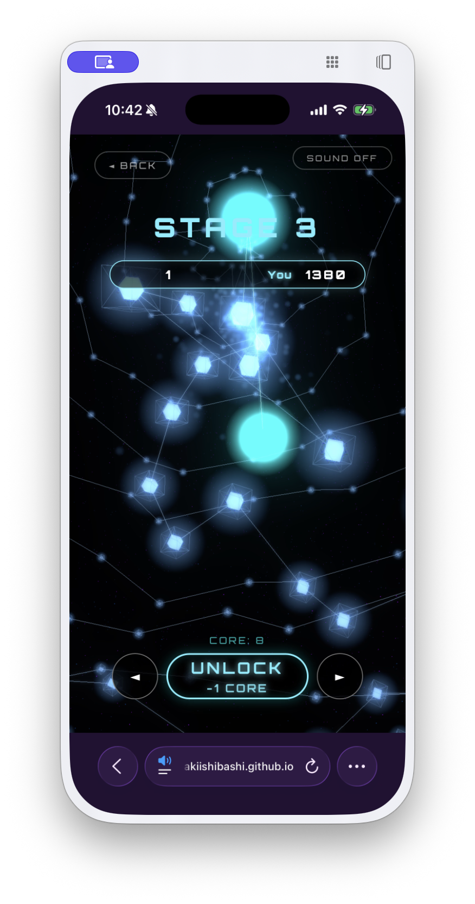
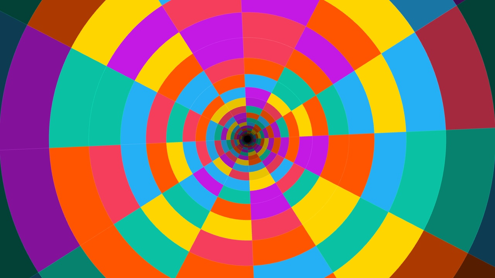
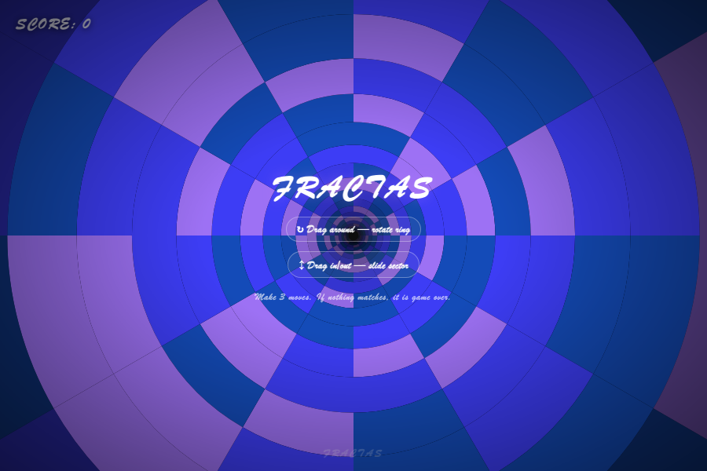

— From Concept to Launch —
Author: Author & AI Partner English Edition
This book was written by two people.
One is a human author who has built games and shipped them to the world. The other is an AI — a partner who sat right alongside, writing code, tossing out ideas, and helping push through every obstacle along the way. That's exactly why the cover says "Author & AI Partner."
Just a few years ago, the idea that someone with zero programming experience could build their own game, publish it to the world, run ads, and actually attract players sounded like a distant dream. There was simply too much to learn: programming languages, dev tools, servers, app store reviews, marketing… Most people gave up before they even got started.
But everything has changed. AI is now your partner.
Today's AI can:
In other words, your job is simply to think about what you want to build, tell your AI partner, try what comes out, and then say "I'd like to tweak this part." That's it. You don't need to memorize a single line of code. We're living in an era where anyone can make a game.
There are plenty of books about making games. But this one is different in three key ways.
Everything is written with AI as your partner from the start. You won't find "memorize this function first" anywhere in these pages. Instead, you'll see "ask your AI like this." What you're actually learning isn't syntax — it's how to talk to AI and how to evaluate what comes back.
We don't stop at copying — we take you all the way to inventing. The goal isn't just to be able to build a classic match-3. We go one step further: creating rules that are yours alone — something nobody has seen before. In Chapters 11 and 12, the author walks you through the entire invention process behind original games that were built exactly this way.
We don't stop at building — we take you all the way to shipping. A game isn't finished until someone plays it. That's why this book covers how to publish for free to the world (Chapter 15), how to sync saves across devices (Chapter 16), how to ship as a mobile app to the app stores (Chapter 17), and how to run ads to attract players (Chapter 18) — all with real numbers. The author shares how much was spent on ads, how many players showed up, what worked, and what flopped — nothing held back.
In the first half of the book (Chapters 6–10), you'll work alongside AI to build a match-3 puzzle game from scratch that runs right in the browser. No installation, no cost — a game anyone in the world can play on their phone or PC.
In the second half, you'll use that experience as your foundation and reverse-engineer three games the author actually published — treating them as blueprints.
These aren't hypothetical examples. They're real games — live on GitHub, CrazyGames, and Playgama — that have been advertised and played by real players. Every wall the author ran into and every solution found in making and running those games is woven into the fabric of this book.
All you need is a computer with an internet connection and an account to chat with AI (most are free to start). No special software to buy. No expensive hardware required.
Let's set off on a journey with the best partner you've ever had — and build a puzzle game the world has never seen before.
This book is divided into six parts.
This book is designed to work as a proper textbook. Each part includes chapters for learning the theory alongside hands-on "How To" chapters where you put it into practice.
Reading alone will give you knowledge — but don't stop there. When you hit a prompting example in a "How To" chapter, actually type it into your AI, run the code that comes back, and tinker with it yourself. That's when knowledge stops being passive and becomes real creative ability.
Icon guide - 💬 Prompt to try … A ready-to-copy prompt you can send straight to your AI. - 🛠 Hands-on … Something to actually try and do. - ⚠️ Pitfall … A trap the author stumbled into — and how to get out of it. - 💡 Going further … Advanced challenges to tackle once you're feeling confident.
Now let's dive in — starting with Chapter 1.
"I want to make my own puzzle game!"
If that's you, great news: now is the perfect time. This book is your guide to making that dream happen.
There are two big reasons why building a puzzle game is such an exciting challenge.
Puzzle games are played by people of all ages and backgrounds, all around the world. The global mobile puzzle game market is worth over $12 billion a year (based on 2024 projections). Some hit titles bring in more than $1 billion in a single year. Your game has a real shot at reaching players everywhere on the planet.
And here's what makes puzzles especially appealing: they're something one person (plus an AI) can actually finish — and still compete on the world stage. You don't need a team of dozens or years of development time the way you would for a big-budget RPG. All it takes is a good idea, a simple set of rules, and a well-polished feel. With those ingredients, an indie creation can stand shoulder-to-shoulder with titles from major studios. In fact, the games the author shares later in this book were each built solo — just one person and an AI — and delivered to players around the world.
Sure, there are famous formulas like Tetris and match-3 — but the world of puzzle games is still full of unexplored ideas waiting to be found.
At the heart of every great puzzle is deep, strategic gameplay that emerges from simple rules. And new rules don't have to come from nowhere. Tweaking or combining existing rules can produce a completely fresh experience. What if you took 2048 (merge numbers) and added a mechanic where the whole board tilts and everything slides at once? What if you took a square match-3 grid and made it circular — and let players rotate it? Those are real examples of how the author invented new games (Chapters 11 and 12).
This book is your invitation to invent something like that — and we're going to do it together.
The goal of this book isn't just to teach you how games are made. The real goal is this: create a puzzle game that nobody has ever seen before — your own original idea — and get it out into the world.
To get there, we'll move through two big stages:
And the book doesn't stop there. We'll take you all the way through publishing your game and finding players (Parts V and VI). A game isn't truly done until someone's playing it.
AI is going to be a powerful partner for you at every step — especially on that creative leap from "learning" to "inventing."
Every game developer hits moments of doubt — a design that isn't clicking, a technical problem that won't budge. But here's the thing: you've got an incredible (AI) partner on your side.
In this book, you'll use AI in four key ways:
The development cycle this book proposes looks like this:
"Idea → Test it with AI → Mockup → Refine"
This is mockup-driven development, and we'll dig into it in Chapter 5. This approach lets you explore your own game quickly and deeply — testing ten ideas in a single evening is totally realistic.
This book uses two broad categories of AI. You don't need to worry about the distinction right away, but keep it in the back of your mind.
Both follow the same principle: tell them what you need in plain language, and they'll do it. Start with conversational AI — it's the easiest place to begin.
This book works both as a course and as a reference you can dip into. Conceptual chapters are paired with hands-on "How-to" chapters so theory and practice always go together.
When you work through the hands-on chapters — actually chatting with AI, actually running code — you're building something more than knowledge. You're building real creative muscle. So don't just read. Talk to the AI, run what comes out, and see it move.
Throughout the book, you'll see these icons:
Chapter 3 lays out the full syllabus — treating this book as a 12-session course. If you like to see the whole map before you start the journey, head there next. If you're the type who'd rather just dive in and start building, feel free to jump straight to Chapter 4 and get your environment set up.
Ready? Let's set out on this adventure — you, me, and the best AI partner you've ever had — to build a puzzle game the world has never seen.
Sidebar: Do You Really Not Have to Learn to Code? Halfway true — but it's more accurate to say the way you learn changes. In the old days, you had to memorize syntax and function names before you could write a single line. From now on, you let AI write the code first, run it, read it, and gradually start to understand what it means — in that order. Think of it less like reading a swimming manual before getting in the pool, and more like jumping in with floaties (the AI) already on. Before you know it, you can swim a little without them. By the time you finish this book, you may not be able to write code from scratch — but you'll absolutely be able to read it and give AI precise instructions to fix it. And that's all you need to ship a game.
Puzzle games come in countless flavors. In this chapter, you'll survey the most common rule sets and walk away with a map for generating new ideas.
This isn't just a taxonomy. It's raw material for asking yourself, "What if I combined this rule with that one?" When you reach Part IV and invent your own game, the building blocks you pick up here will come in handy. As you read, mark anything that sparks a "that's cool" or "I want to mash these two together" reaction.
For each category, you'll find the following:
The 💬 prompts don't need to be run just yet. They're here to give you a feel for what you can get from an AI by asking the right question. You'll start building for real in Chapter 6.
[Rule Details] You swap two adjacent pieces to line up three or more of the same type.
Example move: swap B-2 (O for Orange) and B-3 (A for Apple) — A = Apple, O = Orange, G = Grape, L = Lemon, S = Strawberry.
A B C D E
1 G L S G O
2 A [O] A L S ← swap B-2
3 G [A] O S G ← with B-3
4 S L G O L
After the swap, three Apples (A) line up vertically in column B and vanish.
A B C D E
1 G · S G O
2 A · A L S ← matched A's clear
3 G · O S G
4 S L G O L
New pieces fall from above to fill the gaps — and a chain might kick off.
💬 Prompt to try "Build a 6×6 Match-3 puzzle prototype as a single HTML file that runs entirely in the browser. Use five colors of circles as pieces. Clicking two adjacent pieces swaps them; if three or more of the same color align horizontally or vertically, they clear. Pieces above fall down to fill the gaps, and empty spaces are refilled with random colors. Handle chain reactions too. Prioritize mechanics over visuals for now."
🎮 Play it — A real Match-3 built from that exact prompt. Line up three of the same color horizontally or vertically to clear them, and chain combos to rack up your score. In Chapters 6–10, you'll build this same game from scratch alongside an AI.
[Rule Details] Pieces of various shapes fall from above. You slide them left or right and rotate them to stack them without gaps.
Example move: a T-piece is falling. You shift it right, rotate it, and tuck it into a gap.
Falling Rotated and shifted Full row clears
. T . . . . . . . . . .
T T T . → . . T . → (that row vanishes)
. . . . . . T T ↓ pieces above drop down
■ . . ■ ■ . T ■ ■ . . ■
■ ■ . ■ ■ ■ T ■ ← filled
When a row is completely filled, it clears and you earn points.
💬 Prompt to try "Build a Tetris-style falling-block puzzle as a single HTML file that runs in the browser. Use a 10×20 board. Seven tetrominoes fall from the top; left/right arrow keys move them, up arrow rotates, down arrow speeds up the fall. When a row is completely filled, it clears and adds to the score. Game over when the stack reaches the top."
🎮 Play it — Rotate tetrominoes and stack them tight to clear rows. On PC, use the arrow keys; on mobile, use the on-screen buttons below the board.
[Rule Details] You're given several pieces. Rotate and move them to fill the frame without leaving gaps.
Example move: fit an L-piece and a square piece into a 3×3 frame.
Pieces Frame Solved
L . ＋ P P [ . . . ] [ L P P ]
L . P P [ . . . ] → [ L P P ]
L L [ . . . ] [ L L L ]
💬 Prompt to try "Build a Blockudoku-style shape-fitting puzzle as a single HTML file. Use a 9×9 board. Three block pieces (Tetris-like shapes) can be dragged onto the board. When a row, column, or 3×3 block is completely filled, it clears and adds to the score. Game over when none of the three pieces can be placed."
🎮 Play it — Place three pieces onto the 9×9 grid and fill rows, columns, or 3×3 blocks to clear them. Tap a piece to select it, then tap the cell where you want to place it.
[Rule Details] Follow the rules to place the correct number in each blank cell. In Sudoku, the rule is: no number may repeat in any row, column, or 3×3 block.
Worked example: In the 4×4 grid below, what goes in the top-left ?? (In 4×4 Sudoku, each row, column, and 2×2 block contains 1–4 exactly once.)
+-----+-----+
| 1 ? | 4 3 |
| 2 3 | 1 4 |
+-----+-----+
| 3 1 | 2 ? |
| 4 2 | 3 1 |
+-----+-----+
The top row already has 1, 4, and 3, so the only possibility for ? is 2. You find each answer one logical step at a time.
💬 Prompt to try "Build a playable 4×4 Sudoku as a single HTML file. Include one pre-made puzzle. Let the player click an empty cell and type a number. Highlight any cell in red if it conflicts with another in the same row, column, or 2×2 block. Show a clear message when every cell is correctly filled."
🎮 Play it — Place 1–4 in every row, column, and 2×2 block exactly once. Select an empty cell, then tap the number buttons below to fill it in.
[Rule Details] Slide all tiles in one direction. When two tiles with the same number collide, they merge into one tile worth double.
Example move: swipe left to merge two 2-tiles.
Before swipe After swiping left
| 2 | 2 | 4 | . | | 4 | 4 | . | . |
→ ↑ 2 + 2 merged into 4
A new 4-tile appears. Repeat the process and work toward your target.
This type of puzzle is the starting point for Cyber Marge 2048, the author's game introduced in Chapter 11. The author took this core and added "tilt the whole board to slide every tile at once," 3D visuals, and 300 hand-crafted stages — transforming it into something entirely new. Read Chapter 11 alongside this section to see just how far a merge puzzle can evolve.
💬 Prompt to try "Build a 2048 clone as a single HTML file that runs in the browser. Use a 4×4 board. Arrow keys slide all tiles up, down, left, or right; when two tiles with the same number collide they merge into one worth double. After each move, spawn a 2 or 4 tile in a random empty cell. Win when a 2048 tile appears; lose when no moves remain."
🎮 Play it — This "merge and grow" mechanic is the seed that became the author's game Cyber Marge 2048, covered in Chapter 11. Use the arrow keys (or swipe on mobile) to play.
[Rule Details] Connect matching colored endpoints with paths that don't cross each other, using every cell on the board.
Example:
Puzzle Solution
A . B A → → ┐
. . . → ┌ ← ← ┘
B . A B → → A (A connects to A, B connects to B)
The puzzle is solved when every cell is covered and no paths cross.
💬 Prompt to try "Build a Flow Free-style puzzle as a single HTML file. Use a 5×5 board with a few pairs of matching colored dots. The player drags from a dot to trace a path connecting it to its partner. Paths cannot cross. The puzzle is cleared when all pairs are connected and every cell is filled. Include one pre-made puzzle."
🎮 Play it — Drag to connect matching colored endpoints. Don't let the lines cross, and fill every cell to clear the board.
[Rule Details] Arrange the given letters to spell meaningful words.
Worked example: Rearrange [P][L][E][A][P] into a fruit. → APPLE. There are also word-search variants where you hunt through a grid for hidden words.
💬 Prompt to try "Build a Wordscapes-style English word puzzle as a single HTML file. Place five letter circles at the bottom; the player traces letters in order to form words. When a correct hidden word is found (e.g., APPLE, PALE, LEAP, PEA…), it fills into blank tiles above. Clear the puzzle by finding all the words. Keep the word list in the code."
🎮 Play it — Form English words from the six letters P, L, A, T, E, S (8 words are hidden). Tap letters to build a word, then tap Confirm.
[Rule Details] Scan a busy scene for the listed items. Keen observation and sharp focus are your most important tools.
Example scenario: A lively festival scene appears on screen. Goal: "Find the cat holding a lantern!" The player scrutinizes every corner to track down hidden characters and objects.
This genre pairs beautifully with AI image generation. Have an AI draw the background and the target items, then manage only the coordinates in code — and you can churn out busy hidden-object stages with very little effort.
💬 Prompt to try "Build the framework for a hidden-object game as a single HTML file. Layer clickable target items (stored by coordinate) on top of a large background image. When the player clicks the correct spot for a listed item, it gets checked off. Show a clear screen with the player's time when all items are found. Make the background and items easy to swap out later with real images."
🎮 Play it — Tap the five hidden items on the busy board as fast as you can. Go for your best time!
[Rule Details] Your input sets a physical event in motion, and the simulation takes it from there. Angle and timing are everything.
Example move: aim a slingshot Y at a target [T] protected by blocks ■.
Pull and aim Release Hit!
● ● ‥ [T] destroyed
/Y/ → ‥‥‥ ‥ → ■ ■ ■
■■■[T] ■■■[T] (points!)
Aim well and the projectile arcs through the air, smashing right into the target.
For physics puzzles, the fastest path is having an AI wire in a physics engine like Matter.js for you. You don't need to calculate gravity, collisions, or bounces yourself.
💬 Prompt to try "Build an Angry Birds-style physics puzzle in a single HTML file using Matter.js (loaded from CDN). The player pulls back a slingshot with the mouse, releases to launch a ball, and needs to topple stacked boxes to knock all the targets to the ground. Clear the stage when every target is down."
🎮 Play it — Pull the ball back and launch it to smash the boxes and knock out the targets (5 shots). Note: this demo uses a custom lightweight physics system, not an external library.
[Rule Details] A question is displayed along with several answer choices. Pick the right one.
Example question: "What is the tallest mountain in Japan?" — (A) Mount Aso (B) Mount Fuji (C) Mount Yari → Answer: (B).
Quiz games have a big advantage: you can have an AI generate the questions themselves in bulk. Ask it to "write 50 elementary-school science questions in JSON format, each with four answer choices and the correct answer marked," and your content is ready in seconds.
💬 Prompt to try "Build a four-choice quiz game as a single HTML file. Store question data in a JSON array inside the code (each entry has question, choices[4], and answer). Display one question at a time; highlight the chosen answer green for correct or red for wrong, then move to the next. Show the final score after 10 questions. Populate it with 10 sample questions."
🎮 Play it — Eight questions, four choices each. Go with your gut. Correct answers light up green; wrong ones light up red.
[Rule Details] Notes scroll across the screen. Tap or press the button the instant a note overlaps the judgment line |.
Notes incoming Hit when they cross the line
● ● ● → → | ← tap this exact moment to succeed
Judgment line
A successful hit boosts your score and extends your combo. A miss breaks it.
💬 Prompt to try "Build the core mechanic of a rhythm game as a single HTML file. Notes scroll from right to left; press the spacebar exactly when each note reaches the left-side judgment line. Judge hits as Perfect, Good, or Miss based on how close the timing is, and display the score and combo counter. Store note timing in an array inside the code. Use a click sound for now."
🎮 Play it — Tap or press the spacebar the instant a note crosses the judgment line. Aim for Perfect hits and keep your combo alive.
[Rule Details] Study two images placed side by side and tap (or click) anywhere you spot a difference.
Left image Right image
(^_^) (^_^)
/|\ /|\
( G ) ( B ) ← color is different (that's a difference!)
When you tap a correct spot, it gets marked and your count goes up.
This genre also pairs naturally with image-generating AI. Generate one image, ask the AI to make a few subtle changes for the second, then log the changed coordinates as the answer list.
💬 Prompt to try "Build a spot-the-difference game as a single HTML file. Display two copies of the same image side by side, and store the coordinates of the differences in an array. When the player clicks the correct spot on the right image, mark it with a circle. End the game when all differences are found or time runs out. Make it easy to swap in real images later."
🎮 Play it — Compare the top and bottom images and tap all five differences. How fast can you find them all?
[Rule Details] Flip any two face-down cards [?]. If the pictures match, they're removed. If they don't, both flip back over.
1. Flip two cards 2. Match clears them
[?][A][?] [?][ ][?]
[?][?][B] no match → flip back [?][?][ ] match → cleared
Keep going until the board is empty.
Memory is the ideal first game to build. The rules are simple, the state management (flipped / matched) is a great beginner exercise, and an AI can almost always nail it in a single pass. Think of it as a warm-up — you'll give it a light nod in Chapter 4 before diving into bigger projects.
💬 Prompt to try "Build a Concentration (Memory) card-matching game as a single HTML file. Use a 4×4 grid of 16 cards (8 pairs). Clicking a card flips it face-up; if two face-up cards match, they stay cleared; if they don't, they flip back after one second. When all pairs are cleared, show the number of moves and the elapsed time. Emoji are fine for the card faces."
🎮 Play it — Flip cards and find the matching pairs. The straightforward rules make it great for practicing state management — it's a top recommendation as your very first game. Tap cards to start matching!
You've surveyed 13 puzzle types. The key insight to take away is that these are parts — building blocks you can recombine.
New games are born from adding, subtracting, and remixing existing rules. In Part IV (Chapters 11 and 12), the author walks you through the full process of doing exactly that — from initial concept to working implementation — in complete detail.
🛠 Hands-on (Exercise 1) 1. Mark three puzzles from this chapter that caught your interest. 2. Pick any two of them and ask an AI: "Suggest 5 ideas for a new puzzle that combines the rules of [A] and [B], with a one-line description of how each would play." 3. Note down the one idea from those 5 that excites you the most. You'll come back to it in Chapter 8.
Up next: Chapter 3 walks through the full syllabus for this book — your roadmap for the 12 sessions ahead.
This chapter is your blueprint (syllabus) for working through this book as a 12-session hands-on course. It's designed to work equally well for self-study, study groups, or online classes.
Each session is broken down into:
Plan on 90–120 min per session, but go at whatever pace feels right. The one non-negotiable: every session ends with at least one "working thing" or "idea put into words."
┌─ Part I — Discover ────────────────────────────────┐
│ Session 0 Orientation: shake hands with your AI │
│ Session 1 Spread out the puzzle map │
└────────────────────────────────────────────────────┘
┌─ Part II — Get Ready ──────────────────────────────┐
│ Session 2 Talking to AI + your very first step │
└────────────────────────────────────────────────────┘
┌─ Part III — Build (one match-3 game) ─────────────┐
│ Session 3 Planning: decide what to build with AI │
│ Session 4 Put the board and pieces on screen │
│ Session 5 Match detection, clear, drop, chain │
│ Session 6 Score, moves, win/lose (make it a game)│
│ Session 7 Effects, sound, mobile (ship-ready) │
└────────────────────────────────────────────────────┘
┌─ Part IV — Invent ─────────────────────────────────┐
│ Session 8 Remix the rules — invent your own game │
│ Session 9 Elevate it to a "work" with art & sound│
└────────────────────────────────────────────────────┘
┌─ Part V — Ship It / VI — Reach Players ───────────┐
│ Session 10 Publish to the world (free, same day) │
│ Session 11 Cloud save, multi-platform, mobile app │
│ Session 12 Reach players (UA and monetization) │
└────────────────────────────────────────────────────┘
The goal is clear. By the end of Session 7, you'll have shipped a complete puzzle game ready for the world. By the end of Session 12, you'll have actually put it out there and brought real players to it.
To get the most out of this book, make just three promises to yourself.
Always do the work with your own hands. Reading and thinking "I get it" is the biggest waste. Send the prompts in each session to an actual AI. Run the code that comes back in an actual browser. Ninety percent of the real learning happens the moment something works — or doesn't.
Don't aim for perfect. Aim for running. Your first code can be messy. It can be full of bugs. This book's cycle is: get something working first, then fix it. AI will go as many rounds with you as you need. Don't try to squeeze out a perfect result in one shot.
When you're stuck, tell AI everything. "It doesn't work" gives AI almost nothing to go on. Tell it what you were trying to do, what you did, what happened, and what you actually wanted to happen. That framing cuts your time to a solution dramatically. This way of communicating is the most important skill you'll learn in Chapter 5.
For instructors: This syllabus is structured as follows — Sessions 0–2: introduction (orientation phase); Sessions 3–7: hands-on production; Sessions 8–9: open creation (individual projects); Sessions 10–12: publish & grow workshop. You can use Session 7 as "Submission ① (match-3 game)" and Session 12 as "Submission ② (original game + live URL + UA plan)" for graded assessment.
Starting with this chapter, you'll be getting your hands dirty. That said, the very first thing on the agenda is not wrestling with a complicated setup. This book keeps installations and configurations to a bare minimum so you can start building games as fast as possible.
There are plenty of ways to make games out there — Unity, Unreal, Godot, and more. Even so, this book goes with HTML5 / JavaScript (games that run in the browser), and for beginners, the reasons are compelling.
No installation required. You already have a browser on your computer. There's no first-hurdle nightmare of downloading a massive development suite and spending hours on configuration.
One file is all it takes.
Your first game in this book fits inside a single file called index.html. Double-click it and you're playing in the browser. No environment gives you a faster "build it → run it" loop than this.
You can share it with the world, just like that. Put your finished file on the internet and anyone on the planet — on a phone, on a PC, no install needed — can play it with a single URL (Chapter 15). You don't even have to wait for app store approval.
AI is really good at it. HTML/JavaScript is one of the most widely used languages in the world, and AI has written more of it than almost anything else. That means AI gets it right more often when you ask for help — a huge confidence boost for beginners.
You can take it further later. Browser games can be wrapped into native smartphone apps (iOS/Android) and shipped to app stores (Chapter 17). The author's own Cyber Marge 2048 runs as a single HTML codebase deployed to the Web, iOS, and Android simultaneously. Nothing you learn here goes to waste.
⚠️ Pitfall: Don't reach for big tools right out of the gate A classic beginner trap: you psych yourself up to "properly learn a real game engine," spend your entire first week on setup, never write a single line of game code, and burn out before anything runs. This book goes the opposite direction. Build first. Add tools only when you actually need them.
If you have a smartphone, it comes in handy later for "test on a real device" moments — but it's not required.
You could technically write code in Notepad, but syntax highlighting and auto-complete make everything so much more readable. Let's get VS Code installed.
💬 Prompt to try (asking for step-by-step instructions) "Walk me through installing Visual Studio Code for free on Windows (or Mac), step by step, like I've never done this before. After installing it, also show me how to switch the interface to English."
Ask AI and it will give you up-to-date, OS-specific instructions on the spot. Throughout this book, we follow a consistent approach: ask AI for the how-to steps. That way, you're never thrown off when software versions change.
🛠 Hands-on
1. Install VS Code.
2. Create a folder somewhere convenient and name it my-first-game.
3. Open that folder in VS Code (File → Open Folder).
⚠️ Pitfall: Pick a home for your files and stick with it To avoid hunting for lost files later, keep everything in one dedicated spot. The author stores all projects under a
Developmentfolder on an external drive. Pick one folder for "game projects" and create a subfolder for each new game inside it — your future self will thank you.
Time to create your very first file. Here's the twist: you won't type a single character of code yourself. You're going to have AI write it for you.
💬 Prompt to try (your first assignment) "Create the simplest possible browser game as a single HTML file. All it needs to do is show a blue square centered on a black screen, gently bobbing up and down. Output the entire HTML file contents so I can copy and paste it. I'm a beginner, so please add short comments explaining what each part does."
AI will hand you back something like this (the exact output may vary slightly — that's perfectly fine):
<!DOCTYPE html>
<html lang="ja">
<head>
<meta charset="UTF-8">
<title>Hello, Game</title>
<style>
/* Make the entire background black */
body { margin: 0; background: #000; overflow: hidden; }
/* Style the blue square */
#box {
position: absolute; left: 50%; top: 50%;
width: 80px; height: 80px; margin: -40px;
background: #38bdf8; border-radius: 12px;
}
</style>
</head>
<body>
<div id="box"></div>
<script>
// Grab the square element by its id
const box = document.getElementById('box');
let t = 0;
// Called every frame: moves the box up and down over time
function loop() {
t += 0.05;
box.style.transform = 'translateY(' + Math.sin(t) * 30 + 'px)';
requestAnimationFrame(loop); // schedule loop to run again next frame
}
loop();
</script>
</body>
</html>
🛠 Hands-on
1. In VS Code, create a new file inside your folder and name it index.html.
2. Paste all of the code AI gave you, then save (Ctrl+S / Cmd+S).
3. Open the file in your browser (double-click it, or right-click in VS Code and choose an "Open in Browser" option).
4. If a blue square is gently bobbing up and down — congratulations. The very first program you had AI write for you is alive and running in the world.
This moment is the foundation of everything in this book. "Describe what you want → get code back → run it in the browser." You'll repeat this loop hundreds of times from here on out.
You don't need to understand every line. But knowing that an HTML file has three rooms — and what each one does — will make talking to AI dramatically smoother.
| Room | Tag | What it controls | Think of it as… |
|---|---|---|---|
| HTML | Inside <body> |
What is on screen (structure) | The actors and props on stage |
| CSS | Inside <style> |
How it looks (appearance) | Costumes, lighting, placement |
| JavaScript | Inside <script> |
How it behaves (motion, rules) | The script and direction |
Game logic and most of your AI revision requests will live in JavaScript (behavior). "Change a color" → CSS. "Add some text" → HTML. That's all the intuition you need for now. When you're not sure, just ask AI: "Which room do I need to edit for this?"
💡 Going further: Peek inside the developer tools In Chrome, press
F12(or right-click → Inspect) to open the developer tools. The Console tab is where error messages appear. When your game isn't working, look here — red text will point you toward the problem. In Chapter 5, you'll learn that the single most powerful debugging move is to paste that error message straight into AI.
For now, double-clicking your file to open it in the browser is all you need. But once your game starts loading images, sounds, or external data files (like stages.json), the browser's security restrictions can block those loads when you open a file directly.
When that happens, you'll need to open it with a local server — and don't let that phrase intimidate you. Install the "Live Server" extension for VS Code, click a button, and you're done. AI will walk you through it.
💬 Prompt to try (when you need it) "Walk me through installing the Live Server extension in VS Code and opening index.html with a local server. Also explain in one sentence why images and sounds sometimes don't load when you open a file directly."
In this chapter, you set up your environment, had AI write code for you, and ran it in the browser — start to finish. You're ready. In Chapter 5, you'll learn the most important skill in this book: how to talk to your AI partner so you actually get what you're asking for.
In the previous chapter, you experienced the basic loop of "ask in plain words → get code back → run it." This chapter takes that loop and cranks up both the speed and the accuracy. The most important skill you'll build from this book isn't programming syntax — it's how to hold a conversation with AI and get exactly what you want.
First, let's lock in the core pattern that runs through every chapter.
Step 1: Idea "Here's the kind of game I want to build."
↓
Step 2: Try with AI Ask AI to build a quick working prototype (mockup).
↓
Step 3: Play & observe Actually play it and judge what's working — and what isn't.
↓
Step 4: Refine Tell AI "change this part like so" and let it fix things.
↓
(Repeat Steps 2–4 in a loop)
This is called mockup-driven development. Two key ideas drive it.
The author reached 300 puzzle stages and a full 3D neon look by stacking hundreds of these small loops. It all started with a single one-line idea: "What if you tilted a 2048 board and let the tiles slide?" From there, it was prototype, play, tweak — repeated hundreds of times (Chapter 11).
The more of these five ingredients your instructions (prompt) include, the closer AI gets to what you're actually picturing. Think of it like placing a food order — the more detail you give, the better the kitchen can deliver.
| Ingredient | What it covers | Example |
|---|---|---|
| ① What (deliverable) | The shape of the thing you want built | "A match-3 game that runs in a single HTML file" |
| ② How it works (spec) | Rules, controls, and conditions | "6×6 grid, swap neighbors, clear 3 in a row" |
| ③ Constraints | Technologies to use — or avoid | "Vanilla JavaScript only, no external libraries" |
| ④ Context | Your level and environment | "I'm a complete beginner running this in Chrome" |
| ⑤ Output format | How you want the response delivered | "Full code in a copyable block, with plenty of comments" |
Let's see the difference between a weak prompt and a strong one.
❌ Weak example: "Make me a match-3 game." (→ What colors? What grid size? What language? AI will guess, and the result probably won't match what you had in mind.)
✅ Strong example: "① Build a match-3 puzzle that runs entirely in a browser, as a single HTML file. ② The grid is 6×6, with circle pieces in 5 colors. Click to swap two adjacent pieces; when 3 or more of the same color line up vertically or horizontally, they clear. New pieces fall from the top to refill, and chain reactions should be handled. ③ Vanilla HTML/CSS/JavaScript only — no external libraries. ④ I'm a beginner and I'll be running this in Google Chrome. ⑤ Output the complete file contents in a single copyable block, and add short comments to explain each section."
Start by consciously including all five ingredients. Once you get comfortable, you can leave out the ones that are obvious from context.
Asking AI to build an entire game in one shot tends to produce long, error-prone code that's hard to fix when something goes wrong. The trick is to split features into stages and stack them one at a time. Chapters 6–10 of this book are structured exactly this way.
Stage 1: Display the grid and pieces (no matching logic yet)
Stage 2: Add click-to-swap
Stage 3: Clear 3-in-a-row matches
Stage 4: Drop new pieces from the top to refill
Stage 5: Chain reactions, score, move counter, win/lose conditions…
The key is to keep things working at every stage. Picture stacking bricks on a solid foundation — if one brick makes the wall wobble, you know immediately which brick to remove.
💬 Prompt to try (staged approach) "I want to build a match-3 game step by step. For now, please do Stage 1 only: randomly display 5-color circle pieces on a 6×6 grid. No clicking or clearing yet. I'll check that it works before asking for the next stage."
Saying "not yet" explicitly like this keeps AI from racing ahead and dumping a massive block of code on you.
When something isn't working, beginners often just type "it's not working." That doesn't give AI much to go on. Instead, do these three things:
💬 Prompt to try (error help) "I ran the code you gave me in the browser and got this error in the console — it won't load. Can you tell me what's causing it and how to fix it? You only need to show me the relevant section of the fixed code.
Uncaught TypeError: Cannot read properties of null (reading 'style') at loop (index.html:24)"
Error messages are the best hints AI can get. "Tried to read style from null, crashed at line 24" — that's almost all AI needs to pinpoint the problem.
When the issue is visual or feels off, there's no error message to paste — so how you describe the problem matters a lot. Use this four-part formula: "what / what I did / what happened / what I actually want."
✅ Strong example: "When I click a piece and try to swap it with its neighbor (what), even after clicking twice (what I did), the pieces don't swap — they both stay selected (what happened). I want clicking the first piece and then clicking the second to swap them (what I actually want)."
A few phrases worth keeping in your back pocket:
⚠️ Pitfall: AI "fixes" something and breaks something else In a long conversation, AI can lose track of earlier code and return a patch that conflicts with what came before. Two ways to protect yourself: (1) Every now and then, ask "Please give me the full, up-to-date version of the complete code so I can sync my file." (2) At the end of each major feature, duplicate your file and rename it (
index_backup_01.html, etc.). Knowing you can always get back to a working state gives you the freedom to experiment.
Chapter 1 introduced two types of AI. Here's how to think about them in practice.
How you use it: you copy and paste the code into your file and run it yourself. Everything in Chapters 6–10 is completable this way.
Coding AI (tools like Claude Code that read and write files directly on your computer)
The natural path is this: use conversational AI to build the cycle into your muscle memory, then graduate to a coding AI as your game grows. No rush.
🛠 Hands-on (Exercise 2) Take the "bouncing square" from Chapter 4 and evolve it through conversation — one step at a time, confirming each step works before moving on. 1. "Turn the square into a 4×4 grid of 16 cells." 2. "When I click a cell, randomize its color." 3. "When 3 or more cells of the same color line up vertically or horizontally, make them flash briefly."
Once you've done all three steps, you're already standing at the entrance to a real match-3 game. Starting in Chapter 6, you'll build one from the ground up.
You've now picked up the single most important skill in this book — talking to your AI. The five ingredients of a good prompt, staged requests, paste-the-error debugging, and how to ask for changes without breaking what works — you'll use all of these in every chapter ahead. The warm-up is over. Let's head into Part III and start building for real.
This is where Part III — "Build" — begins. Over the next five chapters (Chapters 6 through 10), you'll work alongside AI to build a complete match-3 puzzle game, start to finish.
It's tempting to dive straight into code, but there's one thing to do first: put "what you're building" on a single page. You wouldn't build a house without a blueprint. That said, this isn't a dense technical spec — it's a lightweight game design sheet you can fill out through a casual conversation with AI.
Fill in the following fields for the game you're building. This sheet becomes the foundation for everything in this book.
| Field | What it means | Example (this book) |
|---|---|---|
| Working title | What you call it | Fruit Match |
| Core experience | The #1 fun factor. One sentence. | "The rush of lining up three fruits and watching chains pop off" |
| Board | Size and shape | 8-column × 8-row square grid |
| Pieces | Types and count | 6 kinds of fruit (distinguished by color) |
| Controls | What the player does | Swap two adjacent pieces (click / tap) |
| Match rule | How a match is defined | 3 or more of the same type in a row or column |
| After a match | How the board changes | Pieces above fall down, empty cells refill randomly, chains trigger |
| Win | Clear condition | Reach the target score within a set number of moves |
| Lose | Fail condition | Run out of moves before hitting the target |
| Score | How points are earned | 10 points per piece cleared, bonus for chains |
The most important part of any game plan is the core experience — the one thing that makes players say "this is why I keep playing." For match-3, that usually comes down to the satisfaction of clearing a match and the joy of watching a chain reaction unfold. As long as you're clear on that, the details can change later without losing your direction.
Use AI as a sounding board to sharpen your core experience.
💬 Prompt to try (brainstorming your core experience) "I'm building a match-3 puzzle game. The core experience I have in mind is 'the rush of watching the same fruit disappear in a chain reaction.' To maximize that feeling while keeping things achievable for a beginner developer, what are the three most important things to focus on? And what are three things I can safely leave out of the first version?"
AI might respond with suggestions like: "Animate the clear → fall → clear sequence with a brief pause so players can actually see the chain" or "Hold off on obstacle blocks and special pieces for now." That kind of prioritized feedback is gold. Deciding what not to build is just as important as deciding what to build.
Take the "separate and stack" approach from Chapter 5 and apply it to your project. What you end up with is a roadmap that maps directly to Chapters 7 through 10.
Chapter 7 ▢ Display the board and pieces / swap neighbors ← Foundation
Chapter 8 ▢ Detect matches, clear, drop, refill, chain ← The heart
Chapter 9 ▢ Score, move count, clear / game over ← Make it a game
Chapter 10 ▢ Visual effects, sound, mobile support ← Polish
At the end of each chapter, you'll always have a working index.html in your hands. Even if you stop midway, something is always running — that's the whole point.
Here's the single most important concept in programming — and I want to give it to you now:
Separate the look from the data.
The player sees colorful fruit, but inside the computer, the board is nothing but a table of numbers — a 2D array. If you represent the 6 fruit types as the numbers 0 through 5, the 8×8 board looks like this:
Row 0: [2, 0, 5, 1, 1, 3, 4, 0]
Row 1: [0, 3, 3, 2, 5, 5, 1, 2]
Row 2: [4, 4, 1, 0, 2, 3, 3, 5]
... (continuing through Row 7)
When you commit to this pattern — manipulate the data, then redraw the screen — game logic becomes remarkably clean. Try to manipulate the visuals directly instead, and things get tangled in a hurry. Every piece of code in this book follows this principle.
💡 Going further: Why numbers? A match check boils down to "is the neighbor the same as this cell?" With numbers, that's a single line:
if (a === b). Numbers compare faster than color-name strings, and there's less room for typos. Keep the internals as numbers; convert to fruit only when it's time to display.
🛠 Hands-on (Assignment 3) 1. Fill in the 6.1 format for your own game. Using this book's example (Fruit Match) as-is is perfectly fine. 2. Write your core experience in one sentence. This becomes your north star for every decision ahead. 3. Show your game design sheet to AI and ask for feedback.
💬 Prompt to try (design sheet review) "I've put together a game design sheet for a match-3 puzzle. Can you review it and tell me whether a beginner could realistically build it — and whether it's fun? If there's room to improve, give me up to three suggestions, ranked by priority.
Title: Fruit Match Core experience: The rush of lining up three fruits and watching chains pop off Board: 8×8 Pieces: 6 kinds of fruit (distinguished by color) Controls: Swap two adjacent pieces Match rule: 3 or more of the same type in a row or column After a match: Drop, refill, chain Win: Reach 1000 points in 30 moves Lose: Run out of moves before hitting the target Score: 10 points per piece + chain bonus"
You've got your blueprint. In Chapter 7, you'll draw the board on screen and make the pieces move.
In this book's example you'll build a straightforward match-3 called Fruit Match — but if you came out of Chapter 2 with ideas like "I want to blend 2048 mechanics with falling pieces" or "I want a circular board," hold onto those. Part IV (Chapters 11 and 12) is exactly where you'll remix and reshape the foundation into your own original game. For now, let's build a classic match-3 from start to finish and make it solid.
You've got your blueprint. Now it's time to build the foundation. By the end of this chapter, you'll have a board full of colored pieces that you can swap by clicking neighboring ones. We're not adding match detection yet — just the board and the swap.
Attach the planning sheet from Chapter 6 and send AI your first request.
💬 Prompt to try (Phase 1: display) "I'm building a match-3 puzzle step by step. Please handle Phase 1 only for now. Using the spec below, create a single HTML file with no external libraries. · Display an 8×8 grid centered on the screen. · Randomly place one of 6 fruits in each cell. Represent the fruits as emoji: 🍎🍊🍇🍋🍓🫐 · Store the board contents as a 2D array of numbers (0–5), and draw the screen from that data. · No clicking or clearing yet — display only. · Add English comments to each section for beginners. Give me the full code in one copy-pasteable block."
The code you get back will look roughly like what follows. This is the starting point for the match-3 game in this book.
Create a file called index.html, paste the code below, save it, and open it in your browser.
<!DOCTYPE html>
<html lang="ja">
<head>
<meta charset="UTF-8">
<meta name="viewport" content="width=device-width, initial-scale=1, user-scalable=no">
<title>Fruit Match</title>
<style>
body {
margin: 0; min-height: 100vh;
display: flex; align-items: center; justify-content: center;
background: #0d1326; font-family: sans-serif; user-select: none;
}
/* Board: build the 8×8 grid with CSS Grid */
#board {
display: grid;
grid-template-columns: repeat(8, 48px); /* 8 columns × 48px each */
grid-template-rows: repeat(8, 48px);
gap: 4px; background: #1b2540; padding: 8px; border-radius: 12px;
}
/* Individual cell */
.cell {
width: 48px; height: 48px;
display: flex; align-items: center; justify-content: center;
font-size: 30px; background: #243154; border-radius: 8px;
cursor: pointer; transition: transform .1s;
}
.cell:hover { transform: scale(1.08); }
</style>
</head>
<body>
<div id="board"></div>
<script>
// ===== Config =====
const SIZE = 8; // 8×8 board
const FRUITS = ['🍎','🍊','🍇','🍋','🍓','🫐']; // fruits indexed 0–5
const TYPES = FRUITS.length; // number of fruit types (6)
// ===== Data: hold the board as a 2D array of numbers =====
let board = []; // board[row][col] = a number from 0–5
// Fill the board with random numbers
function initBoard() {
board = [];
for (let r = 0; r < SIZE; r++) {
const row = [];
for (let c = 0; c < SIZE; c++) {
row.push(Math.floor(Math.random() * TYPES)); // random value 0–5
}
board.push(row);
}
}
// ===== View: render the data to the screen =====
const boardEl = document.getElementById('board');
function render() {
boardEl.innerHTML = ''; // clear everything, then redraw
for (let r = 0; r < SIZE; r++) {
for (let c = 0; c < SIZE; c++) {
const cell = document.createElement('div');
cell.className = 'cell';
cell.textContent = FRUITS[board[r][c]]; // convert number → fruit emoji
cell.dataset.r = r; // remember which row this cell belongs to
cell.dataset.c = c; // and which column
boardEl.appendChild(cell);
}
}
}
// ===== Start =====
initBoard();
render();
</script>
</body>
</html>
🛠 Hands-on - Open it in your browser. If you see an 8×8 grid of fruit emoji, you're good. - Reload the page (F5) a few times and confirm the layout changes each time — that means the random initialization is working.
You don't need to understand every line, but let's nail the three key parts. You'll see the principles from Chapter 6 brought to life right here.
board — the number table (your data)
board[r][c] holds the fruit number at row r, column c. This is the single source of truth for your game. Every match check and every swap will operate on this table.
render() — data → visuals
This function reads board and draws the cells on screen. Whenever the data changes, call render() and the screen instantly reflects the new state. This is the mantra of the book: "change the data, then render."
dataset.r / dataset.c — giving each cell an address
We secretly stamp each cell with its row and column number. In the next section, we'll use this to figure out exactly which cell was clicked.
⚠️ Pitfall: emoji showing as □ (tofu boxes) On some systems, 🫐 (blueberry) and other emoji may render as empty boxes. Don't worry about it — just swap it out for a different emoji. Tell AI: "🫐 isn't displaying correctly — please replace it with a fruit emoji that renders reliably," and it'll sort it out.
Now let's add interaction. The flow is: click one piece to select it → click a neighbor → they swap. Ask AI to add this on top of the existing code.
💬 Prompt to try (Phase 2: swap) "Add Phase 2 to the current code: swapping neighboring pieces. · Clicking a cell selects it and highlights it with a glowing border. · While a cell is selected, clicking an adjacent cell (up, down, left, or right) swaps their data and rerenders the board. · Clicking a non-adjacent cell simply moves the selection there. · Clicking the same cell again deselects it. · Use the approach of swapping the board array data and then calling render() to redraw. Please show me what changed or was added."
The logic AI will add looks roughly like this (key parts only):
let selected = null; // currently selected cell {r, c} — null if nothing is selected
// Check whether two cells are neighbors (one step apart horizontally or vertically)
function isAdjacent(a, b) {
const dr = Math.abs(a.r - b.r);
const dc = Math.abs(a.c - b.c);
return (dr + dc) === 1; // exactly one step away in one direction
}
// Swap two cells in the board data
function swap(a, b) {
const tmp = board[a.r][a.c];
board[a.r][a.c] = board[b.r][b.c];
board[b.r][b.c] = tmp;
}
// Handle clicks on the board (event delegation)
boardEl.addEventListener('click', (e) => {
const cell = e.target.closest('.cell');
if (!cell) return;
const pos = { r: +cell.dataset.r, c: +cell.dataset.c };
if (!selected) { // nothing selected → select this cell
selected = pos;
} else if (selected.r === pos.r && selected.c === pos.c) {
selected = null; // same cell clicked → deselect
} else if (isAdjacent(selected, pos)) {
swap(selected, pos); // neighbor → swap data, then
selected = null;
render(); // redraw
} else {
selected = pos; // non-neighbor → switch selection
}
highlight(); // update the highlight border
});
// Add a glowing border to the selected cell (visual only)
function highlight() {
document.querySelectorAll('.cell').forEach(el => {
const r = +el.dataset.r, c = +el.dataset.c;
el.style.outline = (selected && selected.r === r && selected.c === c)
? '3px solid #ffd24a' : 'none';
});
}
What is event delegation? Setting up a click listener on each of the 64 cells individually is a lot of work. Instead, we listen for clicks once on the parent (
#board) and usedatasetto figure out which cell was clicked. This approach also survives arender()call — the listener stays in place even after the cells are redrawn — so it's the pattern we'll use throughout this book.
🛠 Hands-on - Confirm that clicking two neighboring fruits swaps them. - Confirm that clicking a non-neighboring cell just moves the selection. - "Three in a row still doesn't disappear" is exactly the right behavior at this point — clearing comes in the next chapter.
board, and drew it on screen with render().render()).index.html in your hands. This is a good milestone — back it up as something like index_step1.html (see the sidebar in Chapter 5).Up next in Chapter 8, we tackle the heart of the puzzle: match detection, clearing, falling, refilling, and chaining.
Here we go — the heart of your puzzle game. By the end of this chapter, you'll have built the core of what makes match-3 games so satisfying:
Three or more matching fruits line up → they clear → pieces fall down → new ones fill in from the top → if that creates another match, it cascades
Let's stack these pieces up one at a time.
The heart of the game is just four small jobs called in sequence:
① Match detection Find every spot where 3 or more identical pieces line up
② Clear Set those matched cells to "empty"
③ Gravity (drop) Pack remaining pieces down toward the bottom
④ Refill Fill the empty cells at the top with new random pieces
→ Back to ① (if matches formed again, cascade; if not, we're done)
In Chapter 7 you built the swap mechanic. Right after every swap, you'll run this ①–④ loop — the resolution loop — and you'll have a working match-3.
💬 Prompt to try (Phase 3 — resolution loop) "Add a third phase to our match-3 game with the following: · Empty cells are represented by the value -1. · Match detection: a function
findMatches()that scans rows and columns for runs of 3 or more identical values (ignoring -1) and returns the matching cell coordinates as a Set. · Clear: set every matched cell to -1. · Gravity (drop): for each column, compact non-empty pieces toward the bottom (push -1s to the top). · Refill: replace the -1s at the top of each column with new random fruit values. · Resolution loopresolveBoard(): repeat 'detect → clear → drop → refill' until no matches remain. Add a short pause between each step so the player can see the animation. · Swap rule: after a swap, if no match is formed, revert the swap (invalid move). If a match forms, run the resolution loop. Show me exactly what changed, and add beginner-friendly comments."
findMatches()Scan the board horizontally and vertically, collecting every cell that's part of a run of 3 or more identical values.
const EMPTY = -1; // Value that represents an empty cell
// Returns a Set of matched cells. Each element is a "r,c" string (Set prevents duplicates)
function findMatches() {
const matched = new Set();
// --- Horizontal scan ---
for (let r = 0; r < SIZE; r++) {
let runStart = 0;
for (let c = 1; c <= SIZE; c++) {
// Is the current cell the same type as the previous one? (force a break at the edge)
const same = c < SIZE && board[r][c] === board[r][c - 1] && board[r][c] !== EMPTY;
if (!same) {
const runLen = c - runStart; // Length of the current run
if (runLen >= 3) { // 3 or more — mark all of them
for (let k = runStart; k < c; k++) matched.add(r + ',' + k);
}
runStart = c; // Start of the next run
}
}
}
// --- Vertical scan (same logic, rows and columns swapped) ---
for (let c = 0; c < SIZE; c++) {
let runStart = 0;
for (let r = 1; r <= SIZE; r++) {
const same = r < SIZE && board[r][c] === board[r - 1][c] && board[r][c] !== EMPTY;
if (!same) {
const runLen = r - runStart;
if (runLen >= 3) {
for (let k = runStart; k < r; k++) matched.add(k + ',' + c);
}
runStart = r;
}
}
}
return matched; // e.g. {"2,3","2,4","2,5"} for a horizontal run of 3
}
The key insight: The horizontal and vertical scans are literally the same code with rows and columns swapped — nothing more. When code follows a consistent pattern like this, it simplifies dramatically. If you're asking the AI to write it, just say "apply the same logic vertically that you used horizontally" and it'll understand exactly what you mean.
// Clear: set every matched cell to EMPTY. Returns the count cleared (for scoring)
function clearMatches(matched) {
matched.forEach(key => {
const [r, c] = key.split(',').map(Number);
board[r][c] = EMPTY;
});
return matched.size;
}
// Gravity (drop) + refill: for each column, pack pieces down and fill gaps at the top
function dropAndRefill() {
for (let c = 0; c < SIZE; c++) {
// (1) Collect all non-empty pieces in this column, bottom to top
const stack = [];
for (let r = SIZE - 1; r >= 0; r--) {
if (board[r][c] !== EMPTY) stack.push(board[r][c]);
}
// (2) Write them back from the bottom; fill any remaining slots with new pieces
for (let r = SIZE - 1; r >= 0; r--) {
board[r][c] = (stack.length > 0)
? stack.shift() // Existing piece that survived
: Math.floor(Math.random() * TYPES); // New random piece for the gap
}
}
}
Gravity sounds fancy, but what you're really doing is collecting everything that's left in a column and packing it to the bottom, then topping it off with new pieces. Picture each column as a tube — you shake the tube, pieces fall to the bottom, and you drop new ones in from the top.
resolveBoard()Repeat detect → clear → drop → refill until no matches remain. Adding a short pause between steps lets the player actually see the cascade happen.
// A tiny helper that pauses for the given number of milliseconds (creates visual breathing room)
function sleep(ms) { return new Promise(res => setTimeout(res, ms)); }
let busy = false; // Flag to block input while the resolution loop is running
async function resolveBoard() {
busy = true;
while (true) {
const matched = findMatches();
if (matched.size === 0) break; // No more matches — cascade is done
// (Adding a clearing animation here feels great — see Chapter 10)
clearMatches(matched);
render();
await sleep(180); // Pause so the player sees the pieces disappear
dropAndRefill();
render();
await sleep(180); // Pause so the player sees pieces fall
}
busy = false;
}
In match-3, only swaps that create a match are valid. If a swap doesn't produce any match, it gets reverted — that's the invalid move rule. Here's how to update the click handler from Chapter 7 to enforce this.
boardEl.addEventListener('click', async (e) => {
if (busy) return; // Ignore clicks during the resolution loop
const cell = e.target.closest('.cell');
if (!cell) return;
const pos = { r: +cell.dataset.r, c: +cell.dataset.c };
if (!selected) { selected = pos; highlight(); return; }
if (selected.r === pos.r && selected.c === pos.c) { selected = null; highlight(); return; }
if (isAdjacent(selected, pos)) {
const a = selected; selected = null; highlight();
swap(a, pos); render(); // Perform the swap and show it immediately
await sleep(120);
if (findMatches().size > 0) { // Match found — run the resolution loop
await resolveBoard();
} else {
swap(a, pos); render(); // No match — revert the swap (invalid move)
}
} else {
selected = pos; highlight(); // Non-adjacent cell — reselect
}
});
When you fill the board with random pieces, there's a good chance some matches already exist before the player touches anything. Run the resolution loop once at startup to settle the board into a clean state.
💬 Prompt to try (final polish) "At startup, if the random board already has matches, resolve them before the player makes any move so the game starts with a clean board. Also, if the board ever reaches a state where there are no valid moves left, automatically reset and refill it."
Here's what the startup function looks like:
async function startGame() {
initBoard();
render();
await resolveBoard(); // Clear any matches from the initial random board before we begin
}
startGame();
🛠 Hands-on - Swap two adjacent identical fruits to make a run of 3, then watch the clear → gravity (drop) → refill sequence play out. - See if you can trigger a cascade — where the refill creates a new match that clears automatically. - Try a swap that doesn't line anything up; confirm it snaps back on its own (invalid move).
⚠️ Pitfall: Rapid tapping during animation causes bugs If the player clicks rapidly during an
await sleeppause, the board can get processed twice and end up in a broken state. That's exactly what thebusyflag prevents. Block input while busy — this is rule #1 whenever you add animations to a game. If you see weird behavior, ask the AI: "Check whether player input is properly blocked during the resolution loop."
busy flag to block input while busy, keeping the board from getting corrupted during animations.You now have a board that clears and cascades. But it's not quite a game yet — there's no score and no ending. Chapter 9 takes everything you've built and turns it into something you can actually play all the way through.
In the previous chapter, you built a board where tiles vanish and chain reactions cascade. But it's still not quite a game — there's no goal and no ending. In this chapter, you'll add a score, a move counter, win/lose conditions, and a restart button to turn your project into something you can actually play all the way through.
Strip any game down to its core and you'll find it answers four questions:
| Element | Question | Our Answer |
|---|---|---|
| Goal | What are you trying to do? | Reach the target score |
| Progress | How far along are you? | Current score / moves left |
| Win | When do you succeed? | Reach the target score within the move limit → Clear |
| Lose | When do you fail? | Run out of moves before reaching the target → Game Over |
The tension between the goal and the constraint (move limit) is exactly where excitement — and fun — comes from. Throughout this chapter we'll use "reach 1,000 points in 30 moves" as our example.
Values like score and moves left represent the game's current state. Rather than scattering them around your code, collect them in one object — it makes everything much easier to manage.
// ===== Game state =====
const GOAL = 1000; // target score
const MAX_MOVES = 30; // total moves allowed
let state = {
score: 0, // current score
moves: MAX_MOVES, // moves left
over: false, // whether the game has ended
};
💡 Grouping everything under a single
stateobject means a restart is as simple as resettingstateto its initial values. When you add a save feature in Chapter 16, all you'll need to do is save and restorestate— future-you will thank present-you.
Display the score and moves left above the board. This kind of in-game information display is called a HUD (Heads-Up Display).
💬 Prompt to try (Phase 4: HUD and win/lose) "Add a Phase 4 layer to the current match-3 game with the following: - A HUD above the board showing 'SCORE / Target 1000' and 'MOVES LEFT 30'. - Decrease moves left by 1 each time the player makes a valid swap (one that creates a match). Invalid swaps don't count. - Award 10 points per piece cleared. Also add a chain bonus so that more chains in a single swap earn a higher score multiplier. - When the score reaches the target, show a 'CLEAR!' overlay. If moves run out before that, show a 'GAME OVER' overlay. - Place a 'Play Again' button on both screens that restarts from the beginning. Show me the HTML, CSS, and JS changes needed."
Add the HUD and result screen markup to your HTML:
<div id="hud">
<span>SCORE <b id="score">0</b> / 1000</span>
<span>MOVES <b id="moves">30</b></span>
</div>
<div id="overlay" class="hidden">
<div id="result-title">CLEAR!</div>
<button id="retry">Play Again</button>
</div>
Wire the scoring logic into the resolution loop from Chapter 8. The deeper the chain, the higher the score — this single rule is what makes a well-timed chain feel so satisfying.
function addScore(piecesCleared, chainLevel) {
// Base points: 10 per piece. Chain bonus: multiplier increases with chain depth
const base = piecesCleared * 10;
const bonus = 1 + (chainLevel - 1) * 0.5; // chain 1=×1.0, chain 2=×1.5, chain 3=×2.0...
state.score += Math.round(base * bonus);
updateHUD();
}
function updateHUD() {
document.getElementById('score').textContent = state.score;
document.getElementById('moves').textContent = state.moves;
}
Extend the resolution loop from Chapter 8 (resolveBoard) to track chain depth and award points:
async function resolveBoard() {
busy = true;
let chain = 0; // which chain we're on
while (true) {
const matched = findMatches();
if (matched.size === 0) break;
chain++; // increment chain counter
const cleared = clearMatches(matched);
addScore(cleared, chain); // ← award points with chain bonus
render();
await sleep(180);
dropAndRefill();
render();
await sleep(180);
}
busy = false;
checkEnd(); // check win/lose once chains are done
}
Decrease the move counter by one only when the player makes a valid swap (one that creates a match). It's just one extra line in the click-handling branch from Chapter 8.
if (findMatches().size > 0) {
state.moves--; // ← valid swap: consume a move
updateHUD();
await resolveBoard();
} else {
swap(a, pos); render(); // invalid swap: undo it (no move consumed)
}
Check win/lose conditions after every chain sequence resolves:
function checkEnd() {
if (state.over) return;
if (state.score >= GOAL) {
endGame(true); // win
} else if (state.moves <= 0) {
endGame(false); // out of moves: Game Over
}
}
function endGame(win) {
state.over = true;
document.getElementById('result-title').textContent = win ? 'CLEAR!' : 'GAME OVER';
document.getElementById('overlay').classList.remove('hidden'); // show result screen
}
The "Play Again" button resets state to its initial values and starts fresh. Because you grouped everything under state back in section 9.2, this is refreshingly simple.
document.getElementById('retry').addEventListener('click', () => {
state = { score: 0, moves: MAX_MOVES, over: false }; // reset state to initial values
document.getElementById('overlay').classList.add('hidden');
updateHUD();
startGame(); // rebuild the board and start over
});
🛠 Hands-on - Confirm that each swap decreases moves left and each clear increases the score. - Confirm that chaining triggers a bonus and the score jumps noticeably. - Reach 1,000 points and see CLEAR. Run out of moves and see GAME OVER. - Hit "Play Again" and confirm the game restarts from scratch.
You've just built a match-3 game you can play all the way to the end. That's a real game — be proud of it.
Most of the fine-tuning that makes a game feel right comes down to tweaking numbers. This is called game balance, and it's one of the deepest — and most enjoyable — parts of game design.
| Number | Increase → | Decrease → |
|---|---|---|
GOAL (target score) |
Harder | Easier |
MAX_MOVES (move limit) |
Easier | Harder |
TYPES (number of colors) |
Harder (matches are rarer) | Easier (matches come more often) |
| Chain bonus multiplier | Chains are more rewarding | Rewards steady, consistent play |
🛠 Hands-on (balance tuning)
Try lowering TYPES from 6 to 5 and play a round. Matches should come easier, chains should cascade more often, and the whole thing should feel more satisfying. Bump it up to 7 and you'll feel the extra challenge. Finding the number that feels best to you is the designer's job.
💬 Prompt to try (ask AI about balance) "I want to tune the balance of my match-3 game. Right now it's 8×8, 6 colors, 30 moves, and a target of 1,000 points. When I playtest it, clearing feels too easy. I want to make it harder without turning it into a luck-fest. Can you give me 3 options for which numbers to change and how, with a one-line explanation of the intent behind each?"
state object for easy state management, making restart and future save features trivial.The mechanics are complete. But right now your game probably feels a little bare — there are no effects when pieces clear and no sound. In Chapter 10, you'll add visual effects, sound, and mobile support to polish it into something you'd be proud to show someone.
Your game has all the features it needs. Now it's time to refine the feel. Even with identical rules, a game feels dramatically better when matches flash and vanish with a pop, a satisfying sound plays, and pieces glide smoothly under your finger on a phone. The difference between amateur and professional games almost always lives in that final 20%.
In this chapter you'll add three things: (1) match-vanish effects, (2) sound effects, and (3) mobile swipe controls. Deeper audio work comes in Chapter 14, and 3D visuals in Chapter 13 — here you'll focus on getting things feeling great with the least possible effort.
In the resolution loop from Chapter 8, matched tiles were instantly set to -1. If you slip a "flash, expand, then vanish" animation in right before that moment, the satisfaction level shoots up.
💬 Prompt to try (match-vanish effect) "Add a vanish effect when matched tiles are removed. Attach a
.popclass to each matching cell element, and use CSS to animate it: 'briefly flash white → scale up while fading to transparent' over 0.18 seconds. Only clear the data to -1 and start the drop sequence after the animation finishes."
Define the animation in CSS:
/* Vanish effect: flash white, burst, then disappear */
@keyframes pop {
0% { transform: scale(1); filter: brightness(1); }
40% { transform: scale(1.25); filter: brightness(2.5); } /* brief blinding flash */
100% { transform: scale(0); filter: brightness(2); opacity: 0; }
}
.cell.pop { animation: pop .18s ease-out forwards; }
In the resolution loop, attach .pop to each matched cell, wait for the animation duration, then clear the data.
// Attach the effect class to every cell in matched (a Set of "r,c" strings)
function playPop(matched) {
matched.forEach(key => {
const [r, c] = key.split(',').map(Number);
const el = boardEl.querySelector(`.cell[data-r="${r}"][data-c="${c}"]`);
if (el) el.classList.add('pop');
});
}
// Insert these lines inside resolveBoard, just before clearMatches:
// playPop(matched);
// await sleep(180); // let the effect play out
// clearMatches(matched);
💡 Going further: particles (flying sparks) Want something flashier? Shoot tiny light particles outward from each vanished tile. Just tell your AI: "When a tile vanishes, launch about 8 small circles in the tile's color outward in random directions and fade them out over 0.5 seconds as a particle effect." The author's own Cyber Marge 2048 fires particles on every merge for exactly this kind of juice (covered in Chapter 13).
You don't need any audio files — you can synthesize sounds entirely in code using the Web Audio API. No copyright worries, no loading delays, just lightweight sounds on demand. For now you'll add just one minimal "pop" match sound; serious sound design comes in Chapter 14.
💬 Prompt to try (sound effects) "Add a minimal sound system using the Web Audio API — no external audio files needed. - Create the AudioContext on the first user interaction (to handle the browser's autoplay restriction). -
playPop(chainDepth)plays a short beep whose pitch rises with each chain level. - Trigger it at the moment tiles are cleared. Include beginner-friendly comments."
let audioCtx = null;
// Initialize audio on the first click/tap — browsers block autoplay before any user interaction
function ensureAudio() {
if (!audioCtx) audioCtx = new (window.AudioContext || window.webkitAudioContext)();
if (audioCtx.state === 'suspended') audioCtx.resume();
}
// Play a higher pitch with each successive chain level
function playPopSound(chain) {
if (!audioCtx) return;
const osc = audioCtx.createOscillator(); // tone generator
const gain = audioCtx.createGain(); // volume
osc.type = 'triangle';
osc.frequency.value = 440 + chain * 120; // pitch rises with each chain
gain.gain.setValueAtTime(0.2, audioCtx.currentTime);
gain.gain.exponentialRampToValueAtTime(0.001, audioCtx.currentTime + 0.18); // quick decay
osc.connect(gain).connect(audioCtx.destination);
osc.start();
osc.stop(audioCtx.currentTime + 0.2);
}
Call ensureAudio() at the top of your first click handler, then call playPopSound(chain) at the point where tiles are cleared in the resolution loop — and you're done.
⚠️ Pitfall: no sound (autoplay restriction) Browsers block audio that plays before the user has interacted with the page. That means
AudioContextmust be created — or resumed — on the very first click or tap. Mobile browsers enforce this especially strictly. If sound works on desktop but is silent on the first load, or starts working only after you tap the screen once, the autoplay restriction is the culprit. The author ran into this trap multiple times with Cyber Marge 2048 on mobile (audio cutting out after backgrounding the app, and more). Full details in Chapter 14 and Appendix B.
On desktop, users click to swap tiles. On a phone, the natural gesture is to swipe a piece in the direction you want it to move, and have it swap with its neighbor. Let's support both.
💬 Prompt to try (swipe support) "Add touch support for mobile. When the user touches a tile and swipes in any of the four directions, swap it with the neighbor in that direction (keep the existing click-to-swap for desktop). Determine direction from the difference between the touch start and end positions. Treat a short tap as a 'select' action. Use
touchstart/touchendand also prevent the default page scroll."
Here's the core logic for detecting swipe direction:
let touchStart = null;
boardEl.addEventListener('touchstart', (e) => {
ensureAudio();
const cell = e.target.closest('.cell');
if (!cell) return;
touchStart = { r: +cell.dataset.r, c: +cell.dataset.c,
x: e.touches[0].clientX, y: e.touches[0].clientY };
}, { passive: true });
boardEl.addEventListener('touchend', (e) => {
if (!touchStart || busy) return;
const dx = e.changedTouches[0].clientX - touchStart.x;
const dy = e.changedTouches[0].clientY - touchStart.y;
// Small movement = tap (select); larger movement = swipe (swap in that direction)
if (Math.abs(dx) < 15 && Math.abs(dy) < 15) { /* handle as tap/select */ return; }
let target;
if (Math.abs(dx) > Math.abs(dy)) { // horizontal swipe
target = { r: touchStart.r, c: touchStart.c + (dx > 0 ? 1 : -1) };
} else { // vertical swipe
target = { r: touchStart.r + (dy > 0 ? 1 : -1), c: touchStart.c };
}
trySwap(touchStart, target); // encapsulate the Chapter 8 swap logic in a function for reuse
touchStart = null;
});
Swipe detection turned out to be the biggest challenge the author faced in Cyber Marge 2048. The tricky edge case: on desktop, using iPhone Mirroring with a mouse causes a tiny physical click depression that moves the cursor slightly, enough to register as an unintended swipe direction. The solution was to ignore the first few tens of milliseconds of movement and latch onto only the intended axis — a technique called axis lock. Swipe controls are a much deeper rabbit hole than they first appear (see Appendix B).
If the board is a fixed size, it'll overflow on small phones or feel tiny on large monitors. Let's make the cell size track the screen width automatically.
💬 Prompt to try (responsive) "Make the cell sizes adjust automatically to the screen width. The full board should fit comfortably on a phone in portrait mode with nice margins. Use CSS
min()andvwunits. Include an appropriate<meta name=viewport>tag, and adduser-scalable=noto prevent pinch-zoom from breaking the layout."
:root { --cell: min(11vw, 56px); } /* smaller of: 11% of screen width, or 56px */
#board {
grid-template-columns: repeat(8, var(--cell));
grid-template-rows: repeat(8, var(--cell));
}
.cell { width: var(--cell); height: var(--cell); font-size: calc(var(--cell) * 0.62); }
🛠 Hands-on - Narrow your browser window on desktop and confirm the board shrinks to fit. - Open the game on your phone (you'll be able to test on a real device once you publish in Chapter 15) and verify that swiping moves pieces. - Confirm that the vanish effect and sound are both working.
Starting from the concept in Chapter 6, you've built up the board (Chapter 7), the engine (Chapter 8), the game loop (Chapter 9), and now the polish (Chapter 10):
A complete match-3 game — with effects and sound — that plays great on both mobile and desktop.
This isn't a practice exercise. Follow the steps in Chapter 15 to publish it, and people all over the world can play your very first game.
🛠 Hands-on (Project Submission 1)
- Save your finished game as fruit-match.html.
- Share it with a friend or family member and jot down three pieces of feedback. Watching someone else play is the best learning you can get. The spots where they get stuck and the controls they misread become your next round of improvements.
This is the end of "follow the blueprint and build something proven." Starting in Part IV, you'll move toward the book's second goal — inventing a game no one has seen before, that's yours alone. Chapter 11 kicks it off by pulling back the curtain on how the author actually did it: the complete invention story behind Cyber Marge 2048.
In this chapter, we'll tear apart a game the author actually built and shipped to the world — using it as a blueprint. First up: Cyber Marge 2048. It started with the number puzzle introduced in Chapter 2 — that classic game 2048. So how did it evolve into a 3D neon experience with 300 unique stages published across multiple platforms? Let's walk through the invention process, step by step.
It all started with a single line of thought.
"What if I took 2048 and added 'tilt the board so everything slides'?"
In 2048, swiping in any direction sends all tiles sliding that way, and matching numbers merge. The author wanted to layer on something more physical — a feeling of blocks actually sliding under gravity as the board tilts. Then, instead of plain numbers, he imagined growing glowing Cyber Cores in a neon sci-fi world.
This is exactly the "mix, match, and remix existing rules" idea teased at the end of Chapter 2. No brand-new genre was invented from scratch. Just one familiar ruleset, plus one new element. That's the most realistic starting point for any invention.
💬 Prompt to try "I want to build on 2048's rules, but change the input so that tilting the board slides all blocks at once. When two blocks of the same value (same-colored blocks) collide, they merge and rank up. The vibe is sci-fi neon. Based on this direction, give me 10 ideas for making it more fun. Also tell me what I can safely cut from the first prototype."
The AI came back with suggestions like: "assign each merge tier a color and name so growth feels tangible," "make the win condition 'create X blocks of a target tier,'" and "vary the board shape per stage for a unique feel each time." The author picked what resonated, tested it, and layered on more — running the mockup-driven development loop from Chapter 5 literally hundreds of times.
Here's the design that crystallized:
| Element | Description |
|---|---|
| Core experience | The addictive pull of tilting the board, sliding blocks, and merging same-colored pieces to make them grow |
| Controls | Swipe or arrow keys to tilt the board (all blocks move in that direction) |
| Merging | Two blocks of the same tier (rank) collide → they merge into the next tier up |
| Win | Create a set number of blocks at a target tier |
| Lose | The board fills up and no more moves are possible |
The structure is surprisingly close to the match-3 game you built in Part III. "Manipulate data (the board's numbers), then redraw" and "check → change → chain" — those same principles apply here. The only difference is "line up three to clear" becomes "merge two to level up." If you made it through Part III, this invention is well within your reach.
The numbers in 2048 (2 → 4 → 8 → …) are replaced in Cyber Marge 2048 with 7 colored tiers. Color communicates "leveling up" more intuitively than a number ever could.
// 7 tiers: from CYAN (weakest) to WHITE (strongest)
const TIER_COLORS = ['#00d4ff','#39ff14','#ffff00','#ff8800','#ff2244','#ff00ff','#ffffff'];
const TIER_NAMES = ['CYAN','GREEN','YELLOW','ORANGE','RED','MAGENTA','WHITE'];
Two CYANs collide → GREEN. Two GREENs → YELLOW. Keep going and you get a brilliantly white Core. All it takes is reading "same number merges" as "same tier merges" — the internal logic is almost identical to 2048.
💡 Going further: This is abstraction thinking in action. Whether it's "2, 4, 8…" or "CYAN, GREEN, YELLOW…," the program sees the same thing: just 0, 1, 2… as sequential integers. Merging means "if the same index, make it index + 1." Separate look from data — the principle from Chapter 6 shows up here too.
In match-3, the board was generated right inside the code. But when you're looking at 300 stages, hard-coding everything hits a wall fast. So Cyber Marge 2048 moved all stage information into an external data file: stages.json.
{ "w": 4, "h": 4, "spawn": 1, "spawnRate": 1, "cores": 1, "obstacles": 0,
"turns": 20, "initialFill": 0.25, "targetTier": 4,
"map": ["1111","1111","1111","1111"],
"theme": "NEON", "bg": "050510", "plane": "080c10", "grid": "00ffff" }
map defines the board shape (1 = active cell, 0 = hole). Change this alone and you can create squares, rings, H-shapes, spirals, mazes — unlimited board shapes.targetTier is the win condition tier for that stage.theme, bg, and grid control the visual look (colors and lighting) for that stage.Separate the program (how you play) from the data (what the stage is). This is the move that makes scaling possible. You can add a new stage by adding to the JSON file — no touching the program. Thanks to this structure, the author was able to ship 300 stages as a solo developer with an AI co-pilot.
💬 Prompt to try "Right now my stage information is hard-coded. I want to move it into an external stages.json file that gets loaded at startup. Change the setup so board shape, win condition, and colors all live in JSON and get fetched when the app launches. Include a sample JSON for one stage."
This is where having an AI co-pilot really shines. Assigning a unique, beautiful color and a one-of-a-kind board shape to every single one of 300 stages — the kind of task that would exhaust any human doing it by hand. An AI handles it all at once by turning the requirements into an algorithm.

To make sure adjacent stages always felt visually distinct, the author used a mathematical trick — the golden angle (137.5°) — to spread hues evenly across all 300 stages.
# Assign a unique hue to each of 300 stages using golden angle distribution
import colorsys, math
GOLDEN_ANGLE = 137.508
for i in range(300):
hue = (180 + i * GOLDEN_ANGLE) % 360 # Shift hue by 137.5° per stage
# Use this hue to generate background, grid, and board colors
Spacing by the golden angle ensures colors stay spread out no matter how many you generate, so neighboring stages always feel different. (Same principle as sunflower seeds packing evenly without clumping.) Instead of agonizing over "how do I make them all different," you ask AI to implement a mathematical distribution rule. That's the content-at-scale mindset for the AI era.
The same approach applies to board shapes. Start with a set of base shapes, multiply them through rotation and reflection, automatically check connectivity (are all cells reachable?), remove duplicates, and select 300 — all delegated to AI.
💬 Prompt to try "Generate 300 unique board shapes (arrays of 1s and 0s as strings) for grids ranging from 4×4 to 6×6, with no duplicates. Requirements: minimum 8 active cells, all cells connected orthogonally (no isolated cells). Use rotation and reflection to expand the pool, then deduplicate. Output in a format ready to drop into the map arrays in stages.json."
Going further: This isn't really "writing code" — it's describing the rules of what you want in plain language and letting AI mass-produce it. Your job is to define what "fun" looks like: minimum cell count, no isolation, neighbor contrast. AI handles the implementation. That's the division of labor.
Cyber Marge 2048 is packed with techniques covered in detail later in the book. This chapter is about the big picture of invention — so here's where the individual topics live:
From building Cyber Marge 2048, here are three patterns you can apply to your own inventions.
Invent by addition. You don't need a brand-new genre. A familiar rule + one new element. 2048 + tilt-and-slide. That combination alone created a fresh experience. The map from Chapter 2 is your ingredient list for this kind of addition.
Ruthlessly separate look from data. Internally, it's just a number (tier = 0, 1, 2…). Visually, it's a color. The stage content is JSON; the play experience is code. The more thoroughly you split them, the easier it is to scale your game — and the easier it becomes to let AI help.
Let AI mass-produce, you make the calls. AI generated the colors and shapes for all 300 stages using rules. But the criteria for "fun" — 8 cells minimum, colors that contrast — those came from the human. AI is unlimited hands. You are the eyes and the judgment. That division of labor is what lets one person ship a polished product to the world.
🛠 Hands-on Take the "combination idea" you wrote down in Chapter 2 or Chapter 6 and map it onto the Cyber Marge 2048 pattern. - What is the "A + B" addition? (Example: match-3 + gravity) - How will you separate "data (content)" from "look"? - What parts could you let AI mass-produce? (stages, colors, enemy layouts…)
In the next chapter, we'll look at another real example — Fractas — and a type of invention that's a little different from addition: "remix the rules of something familiar to turn it into something else entirely."
The previous chapter's Cyber Marge 2048 was an invention through addition. This chapter's Fractas takes a different approach — invention through remix. Even within the same match-3 genre, swapping just one "axis" creates a completely new experience. Let's look at how that works in practice.

Match-3 boards are almost always square grids. Fractas asked just one question:
"What if the board were a circle you could spin?"
The Fractas board is a polar-coordinate grid made up of 12 sectors (pie slices) × several rings (concentric circles). Players move blocks by:
and match three or more blocks of the same color. The soul of match-3 — "line them up and clear them" — stays intact. But simply swapping "move pieces up, down, left, and right on a square grid" for "spin a circle" made the feel and look feel like an entirely different game.
That's what invention by remix means. You take one part of the rules — in this case, the geometry of the board — and replace it with something fundamentally different. If addition is the art of adding elements, remix is the art of swapping dimensions.
💬 Prompt to try "I want to build a match-3 game on a circular (polar) board — 12 sectors × multiple rings — instead of a square grid. Players move colored blocks by rotating rings and sliding sectors, then match three or more. Please prototype this polar-coordinate match-3 in a single HTML file with a canvas. Start with just rotation and sliding working, plus three-in-a-row detection."
What makes Fractas interesting is that the remix didn't stop at the shape of the board. Mid-development, another axis got swapped: timed play → turn-based play.
The first prototype ran on a countdown timer — keep clearing blocks before time runs out. Playing it, though, felt frantic. The slow, thoughtful pleasure of spinning the circle was completely lost. So the design shifted:
"After every 3 valid moves, a slowly rotating scanner sweeps the board and scores it. If there's at least one match, those blocks clear, points are awarded, and tiles are refilled for the next 3 turns. If there are no matches at all, it's game over."
On top of that, every successful scan adds one more color to the refill pool (starting at 3 colors, up to 6), so the challenge ramps up as you progress.
This change transformed Fractas from "frantically clear blocks" into "a quiet, tense game where every move counts".
Lesson learned: An invention is never finished at the first idea. Play it, find the friction, and remix the axis. "Timed vs. turn-based." "Luck vs. skill." "Fast vs. methodical." Games are full of axes like these, and every swap reveals a different game. You won't know which axis fits your core experience until you build it and play it — and that's exactly why being able to prototype quickly with AI is such a powerful weapon.
Another defining feature of Fractas is that the visual effects are wired directly to the rules. They're not decorative eye candy — they're functional.
Players can read exactly what's being scored and what's about to disappear just by watching the light. The effects themselves explain the rules. This is juice — the satisfying, tactile feedback that makes every action feel good — at its best.

⚠️ Pitfall: Effects are a battle against performance Early in Fractas's development, the effect scanned the entire board every frame and lit every block at full brightness. It was sluggish and the animation stuttered. The fix was to only calculate which blocks should light up when the board state changes, and from then on just animate the brightness over time. Spectacle and performance can coexist, but it takes intentional design around when to run the calculation. If you hit this wall, ask AI: "This effect is too heavy — how can I reduce the number of calculations while keeping the same visual result?"
Fractas doesn't use a single external audio file. Every sound is generated on the fly with the Web Audio API (covered in detail in Chapter 14). And every sound is tied to a player action:
"The feel of spinning." "The sense that something's about to connect." "The moment of disappearance." With audio feedback at every step, the simple act of spinning the circle becomes genuinely pleasurable.
Fractas was born from an experimental prototype one afternoon (Fractus - Prototype v0.25). Turning that into a finished product meant leaving the core game logic almost entirely alone and focusing on:
Score integration means notifying the parent site of the player's score when the game is embedded in an iframe.
// Notify the host site of the score (when embedded as an iframe)
parent.postMessage({
type: 'SCORE_UPDATE', game: 'fractas', score: currentScore,
metadata: { mode: 'turn3', turns: totalTurns, colorCount: colors }
}, '*');
The host site receives this and records it on the leaderboard. The gap between "an interesting prototype" and "something you can actually ship" lives in this surrounding presentation layer. Even a great game core can't be shown to the world without a title screen, control instructions, and score tracking. This "final polish" is exactly where most people stop short — and exactly where you can stand out.
💬 Prompt to try (turning a prototype into a finished product) "I want to polish my finished prototype for public release. Please add: (1) a title screen and a control-hint overlay, (2) a small watermark with the game's name in a corner of the screen, and (3) logic that sends the score via
postMessageto the parent window on game over (for the host site's leaderboard). Don't touch the core game logic."
Chapters 11 and 12 have introduced both invention types. Try placing your own idea on this map.
| Method | What you do | Example | Best for |
|---|---|---|---|
| Addition | Add one element to an existing rule set | 2048 + tilt-to-slide = Cyber Marge 2048 | People who feel "this existing game is almost perfect — if only it had X" |
| Remix | Swap one axis of the rules for something else | Match-3 board: square → circle; timing: real-time → turn-based = Fractas | People who daydream "what if this classic worked like Y instead?" |
Neither method requires creating something from nothing. Take something that already exists, and nudge it. That's enough to produce a game no one has ever played before. And the ability to nudge fast — to prototype, play, and nudge again — is the greatest value your AI collaborator brings to the table.
🛠 Hands-on (Workshop 8 — second half) Take the idea you framed as an "addition" in Chapter 11 and now think about it as a remix. - Write down 3 "axes" that define the game (e.g., board shape / timed vs. turn-based / luck vs. skill). - Pick one axis and swap it for something completely different. What game does that create? - Take your most exciting remix and ask AI to prototype it. A single-file minimum prototype is all you need. Play it. Decide what you think.
Starting in Chapter 13, we'll look at the craft of elevating a prototype into a finished product — beginning with visuals, using Cyber Marge 2048's 3D presentation as our case study.
The biggest wall between a prototype and a finished game is how it looks. The same rules can feel completely different depending on whether you're staring at flat colored squares or glowing neon blocks that reflect off the floor beneath them. Players feel the difference — deeply.
In this chapter, you'll learn how to think about pushing visuals to the next level, using the 3D techniques from Cyber Marge 2048 as your guide. Don't worry — you don't need to understand the math behind 3D. If you can grasp the concepts and give AI precise instructions, that's all you need.
When it comes to 3D in the browser, Three.js is the go-to library. It handles all the heavy lifting — cameras, lighting, reflections, and shadows — so you don't have to. Cyber Marge 2048 is built entirely on it.
Let's start by having AI build you the simplest possible 3D scene.
💬 Prompt to try (your first 3D scene) "Load Three.js via CDN (importmap) and create a minimal 3D scene that runs in a single HTML file. All I need is one rounded cube floating in a dark background, slowly rotating. Add beginner-friendly comments to each section — camera, lights, and renderer."
A 3D scene is made of roughly four building blocks. Know these and you can have a real conversation with AI.
| Part | Role | Think of it as |
|---|---|---|
| Scene | The space where objects live | A stage |
| Camera | Your point of view | The audience's eyes |
| Mesh | Shape (geometry) + appearance (material) | An actor and their costume |
| Renderer | What actually draws to the screen | The camera operator |
| Light | Illumination | Stage lighting |
The cyberpunk atmosphere in Cyber Marge 2048 comes down to two things: emissive glow and bloom.
Bloom and other post-processing effects are handled by Three.js's EffectComposer — it's like applying a filter stack to your rendered image. In Cyber Marge 2048, the pipeline goes: render normally (RenderPass) → blur the bright areas (BloomPass).
💬 Prompt to try (neon glow) "Restyle the current 3D scene with a cyber/neon aesthetic. (1) Give the block materials emissive glow so they light up even in darkness. (2) Use Three.js's EffectComposer and UnrealBloomPass to add a soft bloom that halos bright areas. Go with cyan and magenta neon colors."
⚠️ Pitfall: Too much bloom will blow out (overexpose) the screen Bloom looks magical, but crank it too high and everything turns white. This is especially bad on older Android phones, which tend to blow out more easily than desktop. In Cyber Marge 2048, the final solution was to reduce or disable bloom on mobile and switch to tone mapping (which caps maximum brightness). "Perfect on PC ≠ perfect on mobile." Always test the visuals on a real device (see 13.6).
In Cyber Marge 2048, blocks cast faint reflections on the floor beneath them. That single detail is what makes it feel less cheap.
Early on, the author tried a full-screen reflection technique (SSR), but it produced black noise artifacts and had to be abandoned. The fix was switching to Three.js's Reflector — a mirror-surface component — and placing reflective planes directly under each cell of the board. Whether the board is a square grid, a ring, or a spiral, the reflections follow the exact shape.
What to take from this: "The first approach doesn't always work" — that's just development. What matters is describing the symptom (black noise) to AI, asking for alternatives, and being willing to switch. Don't cling to one approach. This is part of the mockup-driven mindset this book teaches.
💬 Prompt to try (reflection) "I want to add faint reflections to the floor of the 3D board so blocks appear to reflect off it. Full-screen reflection (SSR) gave me black artifacts, so use Three.js's Reflector instead. Place mirror planes under each cell of the board. Keep the reflections subtle — just a whisper — and use additive blending so empty cells don't go too dark."
In Cyber Marge 2048, the theme of each stage (NEON / GLASS / MATTE / RETRO / METAL) changes the character of the lighting and surface reflections. The same block looks noticeably different depending on the theme, keeping each world feeling fresh.
This is done with environment maps — pre-rendered surroundings that define how light bounces off surfaces, unique to each theme. Technically, it uses a system called PMREM to pre-generate each environment, but you don't need to know that. Just think of it as: each theme swaps out the "mood of the lighting."
💡 Going further: Keeping players from getting bored with limited assets. The block shapes stay the same — but by varying light, color, and reflections, you can keep dozens of stages feeling new. It's the same philosophy as Chapter 11's "use the golden angle to give every stage a different color palette." Generate variety through rules of change, not by hand-crafting more content.
When a merge happens in Cyber Marge 2048, particles burst outward from the spot and a glowing disc blooms beneath the block. It's the 3D version of the "juice" we talked about in Chapter 10.
The glowing disc is made using a small image — a white radial gradient — composited with additive blending beneath the block. Flashy, but lightweight — that's the ideal when designing visual effects.
💬 Prompt to try (merge effect) "When blocks merge, trigger two effects at the merge position: (1) about 10 particles in the merge color that radiate outward and fade out over 0.5 seconds, and (2) a brief glowing disc — a white radial gradient — that flashes open beneath the block. Keep it light: low particle count, short lifetime."
Here's the biggest lesson from 3D development, and it bears repeating. What looks perfect on desktop will often break on mobile — and that's completely normal. Here's what actually happened during Cyber Marge 2048's development:
Two principles to take away:
💬 Prompt to try (adapt per device) "I want this game to run on older phones too. Detect WebGL2 support in code, and if it's supported, enable heavy effects like reflections and bloom. If it's not, automatically switch to a lightweight mode — reflections off, bloom off, fewer particles."
Now that the visuals are solid, Chapter 14 turns to the other thing that defines whether a game feels like a real product — sound. You'll learn how to generate music and effects entirely in code, without a single audio file, using Web Audio — with examples from both Cyber Marge 2048 and Fractas.
After visuals, it's time for sound. Sound shapes how a game feels just as powerfully as graphics do. And here's the surprising part: you can synthesize audio on the fly in code, with zero audio files (Web Audio API). Every sound in the author's Cyber Marge 2048 and Fractas — from BGM to sound effects — is generated entirely in code. No external music files whatsoever.
You could play back pre-recorded files, but generating sound from scratch has some really nice advantages for beginners.
Web Audio sound is built from just three components. Know these and you can talk to AI about anything audio-related.
| Component | Role | Analogy |
|---|---|---|
| Oscillator | Generates the raw waveform (sine / square / triangle / sawtooth) | Vocal cords |
| Gain | Controls volume; vary it over time to create attack and fade | Volume knob |
| Filter | Shapes brightness and warmth | Equalizer |
And the thing that turns a raw tone into something that sounds natural — with a punch and a fade — is the envelope (volume over time). The clear sound you built in Chapter 10 followed exactly this pattern: loudest at the moment of impact, then decaying quickly.
// Basic single tone that rings and decays ("ding")
function tone(freq, dur = 0.2, type = 'triangle') {
const osc = audioCtx.createOscillator();
const gain = audioCtx.createGain();
osc.type = type;
osc.frequency.value = freq; // Pitch
gain.gain.setValueAtTime(0.25, audioCtx.currentTime); // Initial volume
gain.gain.exponentialRampToValueAtTime(0.001, audioCtx.currentTime + dur); // Decay
osc.connect(gain).connect(audioCtx.destination);
osc.start();
osc.stop(audioCtx.currentTime + dur);
}
Great sound effects don't just make noise — they communicate what's happening in the game. The merge sound in Cyber Marge 2048 is a perfect example.
The merge sound changes in timbre and pitch depending on the resulting tier (rank). Low tiers (CYAN) produce a high, clear tone; high tiers (WHITE) produce a deep, heavy thud. Players know from the sound alone — without even glancing at the screen — that something big just happened. On top of that, glass-like overtones and a spacey echo are layered in to make each merge feel satisfying.
// Higher tier → lower, heavier merge sound (conceptual example)
function playMergeSE(tier) {
const base = 2093 - tier * 260; // Higher tier = lower fundamental
tone(base, 0.18, 'sine');
if (tier >= 4) tone(base * 2.756, 0.22, 'sine'); // Dissonant overtone for high tiers — dramatic impact
}
Design principle: A good sound effect turns differences in state into differences in sound. Chain depth → pitch. Item power → timbre. Failure → dissonance. Once players can read the situation by ear, immersion skyrockets.
💬 Prompt to try (SFX set) "Using the Web Audio API, create a set of sound effects for a merge puzzle game. (1) Merge sound: takes the post-merge rank (1–7) as an argument; higher rank should sound lower and heavier. (2) Item pickup sound: a bright ascending arpeggio. (3) Failure sound: a dissonant descending tone. Keep each one short, with a natural envelope decay. Wrap everything in functions."
This is where generative audio really shines. The BGM in Cyber Marge 2048 isn't a recorded track — it's generative BGM (music) assembled in real time from a chord progression. And it reacts to what's happening on the board.
// Adjust BGM layers based on total block count (conceptual)
function updateBgmLayers(totalBlocks) {
layer0.enabled = true; // Pad (always on)
layer1.enabled = totalBlocks >= 4; // Bass
layer2.enabled = totalBlocks >= 10; // Arpeggio
layer3.enabled = totalBlocks >= 16; // Rhythm
}
Players feel like the music is building with them. That sense of unity is simply impossible with a looping recorded track.
💬 Prompt to try (generative BGM) "Using the Web Audio API, generate an ambient BGM that doesn't feel repetitive. Loop Am → F → C → G every 8 seconds. Start with a constant pad, then use an
intensityargument (0–3) to add bass, arpeggio, and rhythm layers progressively. For the melody, randomly skip the last 3 notes played so it never sounds like it's repeating."
Fractas reads the remaining turn count aloud in English ("Three turns left," etc.). This uses speech synthesis (speechSynthesis), a standard browser feature. No recordings needed — just pass it text and it speaks.
function say(text) {
const u = new SpeechSynthesisUtterance(text);
u.lang = 'en-US'; u.volume = 0.3;
speechSynthesis.speak(u);
}
// Example: say('Three turns left');
Just adding a voice makes your game feel like a finished product. Reading out quiz answers, counting down, play-by-play commentary — the possibilities are endless once you start thinking creatively.
This is the part that gave the author the most grief when converting Cyber Marge 2048 to a mobile app. Don't skip it.
Browsers block audio playback before the user has interacted with the page. That means you need to create or resume AudioContext on the first click or tap (we touched on this in Chapter 10). The correct behavior: silence on the title screen, sound the moment the player touches the screen.
In a mobile app (WebView), switching to another app or receiving a call pauses AudioContext. The problem is that it doesn't automatically resume when you come back. In Cyber Marge 2048, the fix was:
visibilitychange), explicitly resume AudioContext. document.addEventListener('visibilitychange', () => {
if (document.visibilityState === 'visible' && audioCtx && audioCtx.state !== 'running') {
audioCtx.resume(); // Resume audio on return
// If needed, restart BGM with startBgm()
}
});
⚠️ Pitfall: If you see a symptom where speech synthesis still works but sound effects go silent, it's almost certainly this AudioContext suspension. Speech synthesis is managed by the OS and keeps running; only the AudioContext stops. The author tracked down the root cause from exactly this "only one of them plays" symptom. If you ever see it, remember this section (it's also in Appendix B).
💬 Prompt to try (audio interruption fix) "I want to fix an issue where sound stops playing after switching apps on mobile and doesn't come back. Listen for both visibilitychange and pageshow events, and when the page becomes visible again, resume AudioContext and restart the BGM if it was playing. Target iOS WKWebView. Make sure to also handle the 'interrupted' state, not just 'suspended'."
That wraps up Part IV. You've now learned to invent game mechanics (Chapters 11 & 12) and bring your creation to life with visuals and sound (Chapters 13 & 14). Part V is where you take that creation out into the world. Let's move on to Chapter 15: Publishing.
Once your game is finished, it's time to share it with the world. This is where web games truly shine. You don't have to wait for an app store review, and you don't need to pay for a server. Put your finished files on the internet and anyone, anywhere, can play them that same day — with nothing but a URL.
In this chapter, you'll explore publishing destinations in order: your own home base (GitHub Pages) first, then the busy marketplaces (game portals).
Here's a breakdown of the main places you can publish, organized by what each one offers.
| Destination | Nature | Traffic | Revenue | Difficulty |
|---|---|---|---|---|
| GitHub Pages | Your own free server | You drive it | None | ★ (easiest) |
| itch.io | Indie game community | Moderate | Tips & sales | ★ |
| CrazyGames | Massive web game portal | High | Ad revenue | ★★ |
| Playgama | Bridges to many platforms (including YouTube Playables) | High | Ad revenue | ★★ |
The recommended order is straightforward. Start with GitHub Pages to lock in a URL you can share anytime, then confirm everything runs smoothly before applying to portals. Since portals have a review (QA) process, it pays to polish your game at your own home base first.
GitHub is primarily a place to store code, but its "Pages" feature lets you publish any HTML file you upload as a live website — completely free. The author's own Cyber Marge 2048 and Fractas both started here.
Here's how the process flows (for the latest exact steps, just ask your AI):
index.html — plus any assets like stages.json if needed.https://(username).github.io/(repository-name)/.💬 Prompt to try (GitHub publishing) "Walk me through publishing a web game (a single index.html file) on GitHub Pages for free, step by step from account creation. I'm a beginner, so please keep it simple. I'd like to do everything through GitHub's web interface — no command line needed. Also explain what the published URL will look like."
💡 Going further — AI can automate this: Tools like Claude Code can directly register and update your folder on GitHub (commit & push). The author simply says "push the latest version live," and the AI handles copying files, syncing to multiple platforms, and updating GitHub. Once you're comfortable, give it a try (Appendix A).
Once you're stable on GitHub Pages, it's time to bring your game to where the players are. Here the author uses CrazyGames — a portal the author has personally submitted to — to walk you through the "rules" that define the portal world. These principles apply to other portals too, so read carefully.
Portals evaluate every game submitted. On CrazyGames, developers go through a QA checklist they fill out themselves.
CrazyGames doesn't accept a single ZIP upload — you upload files like index.html and stages.json individually (this varies by portal).
This one is important. On CrazyGames:
⚠️ Pitfall: Your name and description need to be right from day one "I'll just use a placeholder name and fix it later" won't work. Choose your game name seriously the first time. Write your description thoughtfully from the start, too. The author learned this the hard way — having to submit a whole new version just to update the description text.
On portals, your thumbnail image and preview video largely determine whether people actually click to play. CrazyGames requires cover images in multiple aspect ratios (landscape, portrait, square) plus a short preview video (no audio, tens of seconds long).
⚠️ Pitfall: The first 3 seconds of your preview video are everything. The author swapped out the opening to show "an exciting chain reaction moment" right at the start, and engagement improved noticeably. Put your most satisfying moment first.
💬 Prompt to try (description text) "Write an English Description and Controls section for a puzzle game I'm submitting to CrazyGames. No HTML tags allowed. The game is: '(your game description here)'. The first 1–2 sentences should make it immediately clear why it's fun. Then list 4 key features as bullet points."
Playgama is a portal that bridges a single submission to multiple platforms, including YouTube Playables. But those downstream platforms come with strict technical requirements. Here's what the author encountered when adapting a game for YouTube Playables:
| Requirement | Details |
|---|---|
| File size | 30 MB or less |
| No external API calls | Zero outbound connections — no analytics, web fonts, CDNs, or anything hosted on an external server |
| No external links | No social share buttons or links to outside websites |
| All-device support | Playable in both portrait and landscape with no black bars |
| Long play sessions | Longer average play time is better (10+ minutes is a good target) |
The "no external API calls" rule hits harder than it sounds. The author had to rebuild the game so that web fonts and libraries (like Three.js) loaded from a CDN were instead bundled locally inside the game. Using procedurally generated audio instead of audio files (Chapter 14) also paid off here — both in file size and in eliminating network calls.
Key takeaway: Every platform has its own set of rules. That's why flexibility — the ability to reshape your code to fit any ruleset — matters so much. The author's approach is to auto-detect which platform the game is running on at startup and switch behavior accordingly (Chapter 16).
💬 Prompt to try (bundle locally) "I want to make this game work with zero outbound network connections. Please find every library and web font currently loaded from a CDN and convert them to load from local files bundled with the game. Also identify and remove any analytics tags or anything else that makes external requests."
The author publishes essentially the same game across GitHub Pages, CrazyGames, Playgama, and itch.io — adjusting the title and certain specs for each destination. This isn't lazy recycling; it's optimization for each venue.
In fact, Cyber Marge 2048 (built for CrazyGames) and Cyber Slide (built for Playgama) are sibling games — nearly identical merge puzzle engines, differentiated only by title and platform SDK integration. The lesson: once you've polished one game, ship it to multiple places and maximize your reach. That's how solo developers build real visibility.
Your first job after going live is to actually play your own game across every environment you can.
The author discovered after publishing that the game froze on startup in one specific environment (the in-app browser in the Facebook app). It took a fix to sort it out (see Appendix B for the cause and solution). "It works on my machine" does not mean "it works everywhere." Publishing isn't the end of testing — it's the beginning.
🛠 Hands-on (Session 10 Assignment) 1. Publish your completed match-3 game (or your own original invention) on GitHub Pages. 2. Open the published URL on your phone and play it. 3. Send the URL to someone — and deliver your game to another human being for the first time, no installation required.
In Chapter 16, you'll add save/load functionality to your published game so players can pick up right where they left off — even across devices. You'll also sort out the different save conventions each portal expects.
You've shipped your game — but right now, closing the browser wipes all progress. With 300 levels on the table, nobody's going to replay from stage one every session. In this chapter you'll implement "continue from where you left off," and then go further: cloud save, so progress follows players across devices. Everything here is drawn from the author's own production designs.
Browsers come with a built-in storage locker called localStorage — a small, persistent box tied to that specific browser. Using it, saving is almost embarrassingly easy.
// Save: write a key-value pair (strings only)
localStorage.setItem('score', '1200');
// Load: retrieve by key (returns null if not found)
const saved = localStorage.getItem('score'); // "1200"
Remember Chapter 9, where you gathered all your game state into a single state object? That pays off right here — you can save and restore the entire state in one shot.
// Save the whole state object (serialize it to a JSON string first)
function save() {
localStorage.setItem('save_data', JSON.stringify(state));
}
// Restore on startup (load if data exists, otherwise use initial state)
function load() {
const raw = localStorage.getItem('save_data');
if (raw) state = JSON.parse(raw);
}
💡 Going further:
JSON.stringifyconverts an object to a string;JSON.parseconverts it back. SincelocalStorageonly stores strings, you'll always use these two together.💬 Prompt to try (implementing save) "Add a localStorage-based save feature to this game. Save the cleared stage number, current points, and best score for each stage, and restore them on startup. Store everything as a single JSON object. Also add a Reset (start over) button."
Saving everything isn't always the right call. The author splits data into two categories:
| Type | Examples | Save strategy |
|---|---|---|
| Core progress | Cleared stages, current points | Save reliably (plus cloud sync — see below) |
| Cosmetic data | Tutorial-seen flag, per-level clear badges | localStorage alone is fine |
Why bother sorting? In the next section, cloud save means shipping data to an external server. Sending everything is heavy, and too many data types become unmanageable. The rule: only the core data you want available on every device goes to the cloud; everything else stays local to that browser.
The author's example: "Cleared stages" and "core count" sync to the cloud. The "clear badge" for each of up to 300 stages, on the other hand, never leaves localStorage. Lots of items and cosmetic data stay local.
Started on your phone, want to continue on your PC? That's cloud save. How you implement it depends on where you publish — each portal provides its own SDK drawer for saves.
| Platform | Where saves live |
|---|---|
| GitHub Pages / itch.io | localStorage only (no cloud) |
| CrazyGames | CrazyGames cloud (via SDK) + localStorage |
| Playgama | Playgama cloud (via SDK) + localStorage |
| Your own site | Your own database (e.g., Supabase) + localStorage |
The key design principle: build one shared wrapper function and route to each platform inside it. Your game logic then just calls "save" or "load" without knowing or caring which platform it's on.
// Save wrapper: write to localStorage immediately, then forward to the cloud (if available)
function storageSave(key, value) {
localStorage.setItem(key, value); // Instant and reliable on every platform
if (platform === 'crazygames' && cgSdk) {
cgSdk.data.setItem(key, value).catch(()=>{}); // Also send to cloud (ignore failures)
} else if (platform === 'playgama' && bridge) {
bridge.storage.set(key, value).catch(()=>{});
}
}
// Load wrapper: prefer cloud, fall back to localStorage
async function storageGet(key) {
if (platform === 'crazygames' && cgSdk) {
try { const v = await cgSdk.data.getItem(key); if (v != null) return v; } catch(e){}
} else if (platform === 'playgama' && bridge) {
try { const v = await bridge.storage.get(key); if (v != null) return v; } catch(e){}
}
return localStorage.getItem(key); // Last resort: local data
}
The design philosophy: "Always save to localStorage first; send to cloud as a fire-and-forget bonus." If the cloud is slow or fails, the game never stalls. Build on the certainty of local saves; layer the cloud on top. Every game the author ships follows this pattern.
Cloud save is where beginners get stuck most often. Here are the traps the author has stepped on firsthand.
The SDK drawer takes a moment to become usable. If you read saves before it's ready, you'll pull from localStorage instead of the cloud — and progress from another device won't show up.
The fix is to guarantee the order: wait until ready, then read saves. The author keeps a Promise for the SDK's initialization and always awaits it immediately before loading save data.
Startup
→ Begin SDK initialization (hold the Promise)
→ Load stage data
→ ★ Await SDK initialization ★ ← This is the key step
→ Read save data (cloud is guaranteed ready)
→ Dismiss loading screen
If the cloud never responds, the loading screen never goes away and the game never starts. The fix is a timeout: "if no response within N seconds, give up and start from localStorage." On top of that, add an absolute safety net: "no matter what, force-dismiss the loading screen after N seconds."
⚠️ Pitfall: These are classic cloud gotchas. Assume the cloud is neither fast nor guaranteed. Design for delays, failures, and non-responses from the start. Skip that, and you'll end up with a hard-to-reproduce bug where only some players can't launch the game.
💬 Prompt to try (robust startup) "I want to make my cloud-save startup sequence bulletproof. (1) Hold the SDK initialization as a Promise and always await it before reading saves. (2) Put a 4-second timeout on the cloud read, falling back to localStorage if it expires. (3) Add a safety net that force-dismisses the loading screen after 10 seconds no matter what. Implement all three."
Rather than relying on a portal's cloud, you can host your own save infrastructure. The author's game portal uses Supabase (a cloud database with a generous free tier) to save logged-in users' progress and sync it across all devices.
You don't need to go this far right away, but it's worth knowing the option exists: a save backend that belongs to you, independent of any portal. This connects to the "next steps" discussed in Part VI and Appendix D.
state object lets you save and restore everything in one operation.In Chapter 17, you'll take the web game you've built and wrap it as a mobile app (iOS/Android) ready for the app store — with real examples from the author's own submissions.
Everything you've built so far is a browser-based web game. But you probably dream of seeing your app listed on the App Store or Google Play. The good news: you can turn your web game into a mobile app with almost no changes at all. The author's own Cyber Marge 2048 runs on the same HTML codebase across the web, iOS, and Android — one codebase on three platforms.
This chapter is a bit more advanced than the rest of the book. Read it as a roadmap for "someday I want to ship on the stores," and come back when you're ready. If this is your first release, publishing to the web (Chapter 15) is more than enough to reach players worldwide.
The concept behind mobile-ifying your game is beautifully simple.
Put a tiny browser (WebView) inside your mobile app, and display your web game inside it.
On iOS, that component is called WKWebView. On Android, it's simply WebView. Both are exactly what they sound like — a browser living inside your app. Your app fills the whole screen with this browser and loads your game's index.html. You don't have to rewrite a single line of your game logic — that's the biggest payoff of building on the web.
┌─────────────────────────┐
│ Mobile App (thin shell) │
│ ┌───────────────────┐ │
│ │ WebView (built-in browser) │ │
│ │ your index.html │ │ ← your game runs exactly as-is
│ └───────────────────┘ │
└─────────────────────────┘
When you published to the web, you put your files on a server. With a mobile app, you bundle your game files directly inside the app so it works offline too. The author's setup includes index.html, the game's JavaScript files, stages.json, and other assets — all packed into the app's folder.
There's one small technical wrinkle here. The WebView inside an app can have trouble reading files directly with fetch due to security restrictions. The author's workaround:
stages.json as a JavaScript variable directly into the game.It sounds complicated, but really you're just handing the data in from the app side rather than fetching it from a file. You can let AI handle all of this.
💬 Prompt to try (WebView app skeleton) "Walk me through building a minimal iOS app that displays my web game (index.html + JS files + stages.json) in a WKWebView. The game files should be bundled inside the app. Since fetch() sometimes can't read local files inside a WebView, also show me how to inject stages.json as a JavaScript variable at launch. Please explain the Xcode steps for someone who's new to iOS development."
To ship on an app store, you need to register as a developer and obtain a few credentials. This is the biggest difference from web publishing — the paperwork.
| What you need | iOS (App Store) | Android (Google Play) |
|---|---|---|
| Developer registration | Apple Developer Program (paid, annual fee) | Google Play developer registration (one-time fee) |
| App identifier | Bundle ID (e.g., com.yourname.gamename) |
Package name (same format) |
| Signing | Certificate + provisioning profile | Keystore (signing key) |
| Review | Yes (human + automated) | Yes |
⚠️ Pitfall: Managing your identifier (Bundle ID) Your Bundle ID and package name are your app's permanent address. Once you publish to the store, you can never change them — so settle on a naming convention before you start (the author uses
com.(studio-name).(game-name)across all projects). The signing and certificate process is also where beginners get confused most often. If you hit an error, paste the exact error message into AI and ask for help (Chapter 5) — that's the fastest way through.
Store review is stricter than the portal review covered in Chapter 15, especially on iOS. Apps can get rejected for missing features or inadequate descriptions. Common rejection reasons include:
The author's own Cyber Slide went through the screenshots and build preparation process before submitting to the App Store. "Web publishing is instant and open to anyone; the stores involve paperwork and review" — keep that difference in mind. That's exactly why this book recommends shipping on the web first to build a track record and polish your game, then taking it to the stores when you're truly ready.
The author runs essentially the same game code across the web, iOS, and Android. What makes this work is the design introduced in Chapters 15 and 16: detect the platform and branch — automatically detect where you're running and adjust behavior accordingly.
// At startup, detect which platform you're running on (conceptual example)
let platform = 'web';
if (location.hostname.includes('crazygames')) platform = 'crazygames';
else if (window.__IS_IOS_APP) platform = 'ios';
else if (window.__IS_ANDROID_APP) platform = 'android';
// From here, use `platform` to switch save destinations, ads, and heavy effects
This lets you keep one codebase while varying:
Instead of building three separate games, you build one smart game that branches. That's the realistic way to manage multiple platforms as a solo developer.
⚠️ Pitfall: Works in the browser, breaks inside the app The WebView inside a mobile app behaves slightly differently from Chrome on your computer. The author has run into this repeatedly — "everything works perfectly in the browser, but one specific thing stops working once it's in the app." After converting to an app, always test every feature on a real device. It's the same lesson as Chapter 15's "publishing is just the beginning."
That wraps up Part V, "Ship It to the World." Your game can now reach players on the web, on mobile, and — when you're ready — in the stores. In the final Part VI, we'll dive into bringing players to the game you've built — user acquisition and monetization. The author shares real costs and real numbers, holding nothing back.
A game isn't finished until someone plays it. No matter how good it is, if nobody knows it exists, it might as well not. In this final chapter, we make the leap from making to delivering. You'll learn how to reach players (UA — user acquisition), how to measure what's working (KPIs), and how to think about monetization — with the real numbers and actual dollars your author spent, laid out honestly.
The figures in this chapter come from the author's own experiments during a specific period, using specific games (including Cyber Marge 2048). Prices, platform specs, and market conditions change over time and by region. Take home the thinking process — how to measure, what to learn — more than any particular number.
Before you spend a dollar on acquisition, you need a way to tell good from bad. Here are the key metrics used on web game portals, along with the benchmarks the author encountered firsthand on CrazyGames.
| Metric | What It Means | Bottom 20% | Top 20% |
|---|---|---|---|
| Plays | Number of times the game was played | ~300 | 1,749+ |
| Gameplay Conversion | % of game-page visitors who actually hit Play | ~20% or lower | 80%+ |
| CTR | % of thumbnail impressions that got a click | ~1% or lower | 5%+ |
| Retention D1 | % of players who came back the next day | ~5% or lower | 14%+ |
| Avg Playtime | Average session length | ~5 min or less | 20 min+ |
| Crash Rate | How often the game crashes | (lower is better) | — |
These metrics reflect two different things at once: acquisition (the front door) and game quality (what's inside). CTR tells you about your thumbnail and first impression. Gameplay conversion tells you how well your game page is working. Retention and average playtime tell you whether the game itself is actually fun. The numbers point you to exactly what needs fixing.
This is the most important thing in this chapter. Straight from the author's experience.
Running ads did increase visits to the game page. But — gameplay conversion (the share of visitors who actually hit Play) collapsed: from 29.7%, down to 5.83%, and then to 1.36%. Plays went up, but the rate of "visitors who actually played" plummeted.
Why? Visitors from ads are mostly low-intent — they clicked because something caught their eye, not because they were searching for a game. Compared to someone who found you organically, they're far more likely to bounce without ever hitting Play. The result:
"More visitors, lower conversion, and a net negative impact on portal rankings."
Portal rankings factor in both Plays and conversion together. Flooding your page with low-quality traffic can actually drop your rank.
The principle to take home: Advertising is an amplifier for a game that's already fun — not a rescue plan for one that isn't. First raise your Retention and average playtime (proof the game is good). Then amplify with ads. Get the order wrong, and you'll pay money to hurt your own standing.
Here's an honest breakdown of every ad channel the author actually tried, with results. Total budget: about $113. Even a small experiment teaches you a lot.
| Metric | Value |
|---|---|
| Spend | about $64 (¥9,548) |
| Impressions | ~57,800 |
| CPM (cost per 1,000 impressions) | ~$1.10 (¥165) — remarkably cheap |
| CTR | ~17.6% — excellent |
| Estimated cost per click | under a cent |
This reached mobile gamers (especially Android users) with surprising precision, and the cost per click was jaw-dropping. Video ads that show actual gameplay are a natural fit for games. Overall, the best-performing channel the author tried.
| Metric | Value |
|---|---|
| Spend | about $9 (¥1,364) |
| Clicks | ~900 |
Google's strength is measuring conversions accurately — whether someone who clicked actually reached the game. That said, the author suspects some budget went to low-value regions outside the intended target, so click quality needs watching. Always narrow geographic targeting to "people physically present" in the regions you care about.
| Metric | Value |
|---|---|
| Spend | about $40 (¥6,015) |
| Video views | ~12,900 |
| Profile visits | 22 |
| Players reached | essentially zero |
This one was a failure. Links in post captions and comments aren't clickable, there's no conversion tracking, and the audience is there to watch videos — not play games. About $40 spent, essentially zero players reached. The hard-won lesson: "boosting a post" and "running a game acquisition ad" are completely different products. The author learned this the expensive way.
Here's a spot where the technical skills from earlier in the book connect directly to acquisition. Portals like CrazyGames display your game inside an iframe — an embedded frame from an external site. That means you can't place a Google Ads conversion tag on the portal page, so you can't measure whether someone who clicked your ad actually made it to the game.
The author's solution: a redirect landing page (play.html) hosted on their own GitHub Pages site.
User clicks the ad
↓
Your own play.html (conversion tag fires here → conversion recorded)
↓ instant auto-redirect
CrazyGames game page (player arrives)
play.html is a featherweight page that fires the tracking tag and then immediately redirects the visitor to the real game page. That's it — but it closes the measurement gap.
The takeaway: Acquisition isn't just marketing. It includes building the technical infrastructure that lets you measure what's happening. The web fundamentals you absorbed in Parts III–V — and your ability to direct AI to build things — turn out to be weapons here too.
💬 Prompt to try (redirect landing page) "Build me a redirect landing page called play.html for ad conversion tracking. It should fire a Google Ads conversion tag, then auto-redirect to a destination URL after 0.3 seconds. Make the tag ID and destination URL easy to swap out."
Beyond acquisition lies monetization. Here's a map of the main ways web games earn money.
| Approach | How It Works | Best For |
|---|---|---|
| Portal ad revenue | CrazyGames / Playgama run ads in your game and share the revenue based on plays | Free-to-play games with broad reach |
| YouTube Playables / Playgama revenue | Distributed via Playgama, earns based on play time (RPM) | Games with long average sessions |
| In-app purchases (IAP) | Mobile app extras — hints, unlocks — sold within the game | Games with meaningful progression |
| Premium / paid | Sold outright on itch.io or the App Store | Polished, self-contained titles |
| Tips / support | "Support the creator" on itch.io | Games with a dedicated fan base |
For most beginners, portal ad revenue is the easiest on-ramp. Players play for free; you earn based on play volume. But real money requires a lot of plays (= acquisition) and long sessions (= fun). Which brings us right back to the principle in 18.2 — quality first, amplification second.
Chasing YouTube Playables RPM puts a premium on average session length. The author is continually working on "how do I keep players playing longer?" Notice how a revenue metric feeds directly back into a game design decision.
Here's a one-page template to help you plan your own acquisition push. Fill this out before spending anything.
🛠 Hands-on (Final Exercise — #12) Write a one-page acquisition plan for your game. - What's your single goal? - What are your current KPIs (fill in what you know)? - Which platform will you test first, and what's your budget cap (even a few dollars is fine)? - How will you define success vs. failure?
Talking it through with AI helps you think it through clearly.
💬 Prompt to try (acquisition plan brainstorm) "I've published a solo-developed web puzzle game. I have about $65 to run my first acquisition test. My goal is 'get more players while finding the game's weak spots.' Walk me through a concrete beginner-friendly plan — which platform to start with, how much to spend, and what to measure. Include the most common pitfalls to avoid."
play.html) and similar tricks. Acquisition is an extension of engineering.You made it. Really — well done.
With an AI as your partner, you've:
In one book, you walked the full path from "I want to make something" to "I shipped something to the world."
Remember the goal we set at the very beginning: "Build a genuinely fun puzzle game that nobody has ever made before — and get it in front of players worldwide." Every tool you need is already in your hands. All that's left is to keep building.
There is no perfect first game. The author's games exist only after hundreds of cycles of build, play, and fix. What matters is this: start making something new today. Your partner — patient, tireless, always ready — is right there whenever you need them.
So. What are you going to invent next?
The appendix has everything you need for the road ahead: a ready-to-use prompt collection (A), the traps the author actually fell into and how to escape them (B), a glossary (C), and a roadmap for your next steps (D). Keep them close.
—— Author & AI Partner
The prompts below are organized by goal, drawing from examples throughout the book. Replace anything in [brackets] with your own content, then paste the prompt directly into your AI. Before you send, think back to Chapter 5 on "The Art of the Ask" — if needed, layer in the five ingredients: what, how it behaves, constraints, context, and output format.
Combining genres
"Give me 5 ideas for a new puzzle that mixes the rules of [Rule A] and [Rule B]. For each idea, include a one-line description of how you play. Keep it within scope that a beginner could prototype in a single file."
Sharpening the core experience
"I'm building [game description]. The heart of the fun — the core experience — is '[core experience].' Give me 3 things I should protect to maximize that, and 3 things I can safely cut at first."
Concept review
"Please review the following concept sheet. Can a beginner realistically implement this, and will it actually be fun? Give me up to 3 improvement suggestions, ranked by priority.\n[paste your concept sheet here]"
Invention: swapping the axes
"List 3 core axes of [existing game] — for example: board shape, turn-based vs. real-time, luck vs. skill. Then tell me what new game you'd get by swapping each axis for something completely different."
First step: minimum prototype
"Build a prototype of [game name] that runs in the browser — one single HTML file, no external libraries. Spec: [bulleted list]. Prioritize getting the mechanics working over making it look pretty. Add beginner-friendly comments throughout the code, and output the whole thing so I can copy and paste it."
Working in stages
"I want to build [game name] step by step. Please handle Stage 1 only: [description]. I'll test it myself before asking for the next stage. Don't jump ahead and build everything at once."
Separating data from display
"Store the board state as a 2D array of numbers, and write a separate render function that draws it to the screen. Whenever the data changes, calling render should update the display automatically."
Adding a feature
"Add [feature] to the existing code without breaking anything that already works. Show me only what you changed or added, and explain where and why."
Paste the error directly (most effective)
"I ran the code you gave me in the browser and got this error in the console — it won't run. What's causing it and how do I fix it? You only need to change the relevant part.\n
\n[paste your console error here]\n"
Visual or behavioral glitches
"When I try to [action], after [trigger], what happens is [unwanted behavior]. What I actually want is [desired behavior]. Fix it with the smallest possible change, and give me a one-line explanation of why it was happening."
Getting a clean current version
"Incorporate all the changes we've made so far and give me the complete, up-to-date version of the code."
Optimizing slow code
"This effect (or process) is causing lag and frame drops. Suggest a way to reduce the number of calculations and make it lighter, while keeping the visual result as close to the original as possible."
Neon glow
"Give the 3D scene a neon look. Make the materials emissive, then use EffectComposer with UnrealBloomPass to make the bright areas bleed and glow. Use [color] tones."
Floor reflections
"Add subtle reflections of the blocks on the floor using Three.js's Reflector. Align it with the grid positions on the board, and keep the reflections understated with additive blending."
Device-based rendering tiers
"Detect whether the browser supports WebGL2. If it does, enable reflections and bloom. If not, switch automatically to a lightweight mode — reflections off, bloom off, fewer particles."
Sound effects (generated)
"Create sound effects using the Web Audio API: (1) [sound 1], (2) [sound 2], (3) [sound 3]. No external audio files — each sound should be short and decay naturally using an envelope. Wrap each one in a function."
Generative background music
"Generate ambient background music using the Web Audio API that doesn't feel repetitive on loop. Cycle through this chord progression: [chord progression]. Add layers based on an intensity argument (0–3): pad → bass → arpeggio → rhythm. Keep the melody feeling fresh by avoiding repeating the same notes from recent bars."
Fixing audio interruptions (important)
"Fix the bug where audio stops when the user switches away from the app on mobile and comes back. Listen for visibilitychange and pageshow events — when the screen comes back into focus, resume the AudioContext and restart any BGM that was playing. Handle both 'suspended' and 'interrupted' states."
Publishing on GitHub Pages
"Walk me through publishing a single-file web game (index.html) for free on GitHub Pages, using only the web interface — no command line required. Include what the final URL will look like."
Implementing save data
"Add save functionality using localStorage. Save [the data I want to persist] and restore it on startup. Bundle all state into one object and save it as JSON. Include a reset button too."
Robust cloud save on startup
"Make the startup sequence with cloud save bulletproof: (1) wrap SDK initialization in a Promise and await it before loading the save; (2) add a 4-second timeout on the cloud load, falling back to localStorage; (3) no matter what happens, force the loading screen to end after 10 seconds."
Eliminating external requests (e.g., YouTube Playables)
"Remove all external network requests. Bundle any CDN libraries and web fonts locally. Identify anything that phones home — analytics tags, trackers, etc. — and strip them out."
Portal store description
"Write an English Description and Controls section for a puzzle game to be submitted to [portal name]. No HTML. The first one or two sentences should immediately convey what makes it fun. Include 4 bullet points highlighting key features."
Brainstorming a marketing plan
"I just published a web puzzle game as an indie developer. I have a budget of [amount] and I want to test my first round of user acquisition. My goal is [goal]. Which platform should I start on, how much should I spend, and what should I measure? Explain it for a beginner and don't skip the pitfalls."
Conversion tracking relay page
"Create a relay page called play.html for ad conversion tracking. Fire the conversion tag, then automatically redirect to a specified URL after 0.3 seconds. Make the tag ID and destination URL easy to swap out."
Reading your KPIs
"I'm pasting the numbers from my portal dashboard below. Tell me where my weak points are and what I should fix first, explained for a beginner.\n[paste your KPIs here]"
A coding AI that can directly read and write files lets you delegate at the folder and workflow level — not just one snippet at a time.
The bigger your game gets, the more a coding AI pays off — cutting out the copy-paste back-and-forth entirely. Start with a conversational AI, then bring in a coding AI once you're comfortable.
Everything in this appendix is lived experience, not textbook theory. These are traps the author ran into during actual game development — problems that ate hours, sometimes days, before a solution emerged. Whenever you hit the same wall, open this page and find your shortcut. Each entry is structured as: Symptom → Cause → Fix → Takeaway.
AudioContext at the moment of the first click or tap. Don't try to play audio on the title screen before that happens.interrupted rather than suspended), and it doesn't auto-resume when you return. The OS manages speech synthesis separately, so it keeps running — producing the "only one of them plays" symptom.visibilitychange / pageshow events and call audioCtx.resume() when the page becomes visible again. Re-trigger any BGM that was playing. Handle both suspended and interrupted states.alert() freezes the screen inside an iframealert() dialogs are blocked inside embedded frames, and the entire execution halts at that call.alert() with on-screen DOM elements that display the message instead.setTimeout, etc.) while the dialog is visible → even the timeout never fires, so the game waits forever.localStorage does not persist across sessions. If first-run detection is based solely on a localStorage flag, that flag is missing every time, making the answer always "first run."localStorage always survives. For decisions that matter, don't rely on a single flag that can disappear — infer from multiple facts (Chapter 16).localStorage.localStorage if it expires.stages.json loads fine in the web version, but after wrapping as a mobile app (WebView), it fails to load — the board goes solid-color or the game won't start.fetch-a-local-file pattern that works in a regular browser.Most of the traps in this appendix take the form of "works in my environment, breaks in a different one." The majority of the difficulty in web development comes from environment differences. That's exactly why this book keeps repeating: publishing is not the finish line — it's the starting gun. Verify everything yourself, in every environment. And when you're stuck, describe your symptom concretely to your AI partner. Your copilot knows these traps well.
This glossary explains key terms from the book in plain language for beginners. If you find yourself thinking, "Wait, what was that word again?"—flip here. Terms are arranged in the order most useful for understanding how they relate to each other.
index.html).<style> tags.<script> tags. The heart of your game logic.board[row][col]. Used to represent a game board.score.render() (redraw). Calling the function runs the code inside.{ "name": "apple", "tier": 1 }. Used to store and transfer settings and stage data.JSON.stringify / JSON.parse: A pair of functions that convert between objects and strings. Use stringify to serialize (save) and parse to deserialize (restore).speechSynthesis): A built-in browser API that converts text to spoken audio. Useful for narration or screen reading.com.example.mygame). Cannot be changed after the app is submitted to an app store.You've made it through this entire book — and that means you're already someone who can build a game and put it out into the world. This appendix sketches a few of the roads stretching out ahead of you. You don't have to take all of them. Just pick the direction that excites you most, and take one step.
Once you've found your footing, here's more territory waiting for you — all of it a natural extension of what you've built in this book.
Technology changes. AI, platforms, and the landscape will all look a little different next year. But what this book really tried to pass on wasn't any set of step-by-step instructions that might go stale.
Put what you want to make into words. Test it with your partner (AI). See it move. Judge it. Fix it. Put it in the world. Measure the response. Then make something new.
That cycle itself is the skill you'll carry for life. As long as you can keep it turning, no new tool or platform will leave you behind — you'll keep building through all of it.
Your first game will probably be rough. The author's first one was too. But only the people who keep making things get to see what comes next.
And you've got a partner right beside you — one that will show up for you every single time, as many times as you need.
So — what will you make next?
🛠 Hands-on — Closing Challenge: Before you close this book, grab a piece of paper or open a notes app and write just one line: "My next game is going to be ____ + ____, and it'll feel like ____." That one line is where your next adventure begins.